Chapter 3 Databases
##Introduction
This chapter provides a quick overview of some of the main sources of free patent data. It is intended for quick reference and points to some free tools for accessing patent databases that you may not be familiar with.
It goes without saying that getting access to patent data in the first place is fundamental to patent analysis. There are quite a few free services out there and we will highlight some of the important ones. Most free sources have particular strengths or weaknesses such as the number of records that can be downloaded, the data fields that can be queried, the format the data comes back in or how clean data is in terms of the hours required to prepare for analysis. We won’t go into all of the details that but will provide some basic pointers.
##The Databases
###The Lens
Previously known as the Patent Lens this is a well designed site with quite a few visualisation options and access to sequence data. It is possible to search the title, abstract, description and claims of patent documents and create and share data in collections. In 2015 the ability to download up to 10,000 records at a time was added. When combined with interactive charts that allow the user to drill down into results set, this has transformed the Lens into a very useful and innovative database and visualization tool.

###Patentscope
The WIPO Patentscope database provides access to Patent Cooperation Treaty data including downloads of a selection of fields (up to 10,000 records), a very useful search expansion translation tool, and translation.

Obtaining sequence data from Patentscope. Note that this rapidly becomes gigabytes of data.

###espacenet
Probably the best known free patent database from the European Patent Office.

###LATIPAT
For readers in Latin America (or Spain & Portugal) LATIPAT is a very useful resource.

Access patent data through the EPO Application Programming Interface (API) free of charge. Requires programming knowledge.

The developer portal allows you to test your API queries and is recommended.

The USPTO main database search page can reasonably be described as well… old. In 2016 the USPTO team initiated an Open Data and Mobility initiative that opens up USPTO patent and trademark data. The new Open Date Portal is still in Beta but provides an insight into things to come.
As part of the shift to open data the USPTO has established an external Patents View for free searches and bulk downloads. If simple searching does not meet your needs, or the bulk options are too overwhelming, then the new JSON API service is likely to meet your needs. The services are still in beta but this is a very exciting development for those who need greater levels of access to patent data or access to specific data fields.
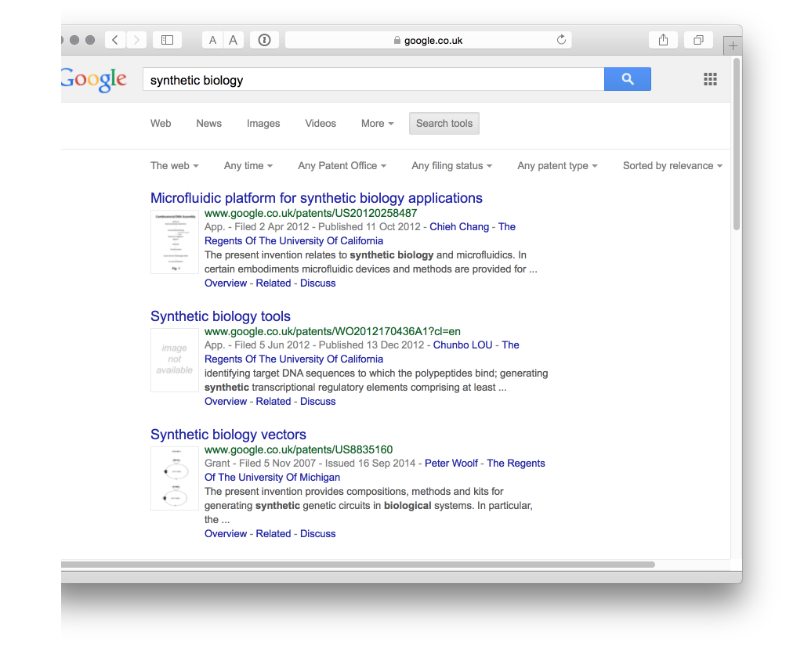
The Google Patent Search API has been deprecated. Access through the Google Custom Search API with the API flag for patents reported to be &tbm=pts with example code for using the API in Python.
In the free version of the Google Custom Search API data retrieval is limited and the patent field headings are unclear (that is they use non-standard names). For free patent analytics, Google Custom Search is presently of very limited use.
The Google Prior Art Finder is a relatively recent development that allows you to enter search terms or patent numbers and to view and export results.

The results include a Top Ten and are broken down into sections including Google Scholar, Patents etc.

The Export button will export the top ten results for each section in a .csv file.

It is possible to load more results for a section (e.g. see More Patent Results at the bottom of the results) and then export them (e.g. 20 patent documents rather than 10). In a test we managed to export 140 patent results but this could rapidly become laborious. An additional issue is that the data will need transposing. At the time of writing we had not identified an API route to Prior Art Finder.
The USPTO patent databases may be archaic but you can download the entire US collection from the Google USPTO Bulk download service.

It is a fantastic service, and an example to patent offices everywhere on freeing up patent data. If you have a good broadband connection and the hard drive space, it is quite good fun to suddenly have access to millions of patent records. The authors used the service to text mine the collection for millions of biological species names as reported here.

However, one important issue to note is that the XML delimiting individual documents is not always well demarcated. This means that any code that will work for one bulk set of files may fail on another set. While it is possible to address this, be prepared to spend time working on this and/or seek assistance from a professional programmer. For an insight into these issues see this Stackoverflow discussion on parsing the data in R.
Sign up for a free account for enhanced access and to save and download data. It has been around quite a while now and while the download options are limited we rather like it.

###DEPATISnet
We are not covering national databases. However, the patent database of the German Patent and Trademark Office struck us as potentially very useful. It allows for searches in English and German and has extensive coverage of international patent data, including the China, EP, US and PCT collections. The coverage details are here. Worth experimenting with.

One that is more for patent statisticians. The OECD has invested a lot of effort into developing patent indicators and resources including citations, the Harmonised Applicants names database HAN database, mapping through the REGPAT database among other resources that are available free of charge.

Along the same lines the US National Bureau of Economic Research NBER US Patent Citations Data File is an important resource.
###EPO World Patent Statistical Database
The most important database for statistical use is the EPO World Patent Statistical Database (PATSTAT) and contains around 90 million records. PATSTAT is not free and costs 1250 Euro for a year (two editions) or 630 Euro for a single edition. The main barrier to using PATSTAT is the need to run and maintain a +200 Gigabyte database. However, there is also an online version of PATSTAT that is free for the first two months if you wish to try it by signing up for the trial (knowledge of SQL required).

For users seeking to load PATSTAT into a MySQL database Simone Mainardi provides the following code on Github.
###Other data sources
A number of companies provide access to patent data, typically with tiered access depending on your needs and budget. Examples include Thomson Innovation, Questel Orbit, STN, and PatBase. We will not be focusing on these services but we will look at the use of data tools to work with data from services such as Thomson Innovation.
For more information on free and commercial data providers try the excellent Patent Information User Group and its list of Patent Databases from Tom Wolff and Robert Austin.

Also worth mentioning is the Landon IP Intellogist blog which maintains Search System Reports

##Tools for Accessing Patent Data
In closing this chapter we will highlight a couple of tools for accessing patent data, typically using APIs and Python. We will come back to this later and are working to try this approach in R.
###Patent2Net in Python
A Python tool to access and process the data from the European Patent Office OPS service.

###Python EPO OPS Client by Gsong
A Python client for OPS access developed by Gsong and freely available on GitHub. Used in Patent2Net above.

###Fung Institute Patent Server for USPTO data in JSON
Researchers at the Fung Institute have also been active in developing open source resources for accessing and working with patent data. We highlight patentserver but it is worth checking out other resources in the repository such as patentprocessor, a set of Python scripts for processing USPTO bulk download data. Note that development of these tools no longer appears to be active.

##Round Up
One problem confronting patent analysts is access to data in a form that is suitable for more detailed analysis. Typically this involves hundreds or many thousands of records. Recent years have increasingly opened up patent data through the ability to download 1,000 or 10,000 records at a time. However, access to downloads of titles, abstracts and claims or descriptions and full text remains limited when this is what is needed. Patent offices such as the USPTO have taken a leading role in making bulk patent data available and this is very much to be welcomed for those working on patent analytics. However, it is reasonable to say that the present situation is one of improvements in access (through Patentscope, the Lens and the EPO OPS service) but not quite in the quantitities or with the data fields patent analysts would like.
#The Lens
##Introduction
In this chapter we provide a brief introduction to The Lens patent database as a free source of data for patent analytics.
The Lens is a patent database based in Australia that describes itself as “an open global cyberinfrastructure to make the innovation system more efficient and fair, more transparent and inclusive.” The main way it seeks to do this is by providing access to patent information with a particular focus on sequence information as well as analysis of issues such as DNA related patent activity. An important feature of The Lens for those working on biotechnology related subjects is PatSeq.
##Getting Started
To get the most out of the Lens the first step is to sign up for an account from the front page.

It is possible to begin searching directly from the front page. However, selecting the small button next to the search box takes you to the search controls.

As we can see we can use boolean queries, for searching a range of fields including the full text, title, abstract or claims (a major plus). We can also select one or multiple jurisdictions. In addition the results can be refined to patent applications or grants, and there are options for full text or one doc per family (which greatly reduces the number of results).
We used our standard query “pizza”, all jurisdictions, and one document per family. We turned stemming off.
Our search for pizza returned 13,714 families from a total of 29,617 publications containing the term in the full text. This approach assists with refining searches by reducing duplication.
The Lens allows users to create collections of up to 10,000 results from a search. To create a collection use the Create Collection button and name the collection. How you add records to a collection is not obvious and involves 2 steps.
- Check the arrow next to Document as in the image below. When the mouse hovers over the arrow a menu will pop up. Choose
Top 10k Results. - In the box displaying the name of the collection above the results press the + arrow to add the 10,000 documents to the Collection.

Once you understand this process it is easy to add documents to collections. One very nice feature of the Lens is that when a collection has been created we can share it with others using the Share button. Users have the option of maintaining a private collection or publicly sharing. The URL for the collection we just generated is https://www.lens.org/lens/collection/9606.
We could imagine that for more restricted searches, and taking confidentiality issues into account, this could be a useful way of sharing patent data with colleagues. One useful addition would be the ability to share with groups based on email addresses or something similar (although that may be possible by choosing a private link and sharing it).
Using the small icons above Document on the left we can save our query for later use, limit the data to simple families or expand to publications, and download the data.
There are two main options for downloading data. The first is to download 1000 records by selecting the export button above Document.
When we select the export button we will be presented with a choice on the number of records to export and whether to export in JSON (for programmatic use), RIS for bibliographic software or .csv for use in tools such as Excel or other programmes.

The outputs of the export are clean and clear about what they represent when compared with some patent databases. A url link to the relevant file on the Lens is also provided which can assist in reviewing documents.

The JSON output (in the lower right of the image above) is also nice and clean.
The second route to exporting data is to download up to 10,000 results using the collections. When we select the Work Area icon at the top of the screen and select Collections we will see a new screen with a range of icons next to an individual collection.

When we select the download icon we can now download the 10,000 records in the collection in either .csv, ris or JSON formats. This is very easy to use once you understand how to navigate the interface.
We also have an option to upload documents into a collection using the upload button and then enter comma separated identifiers. However, at the time of writing we were not able to make this very useful function work.
##Additional features
In addition to these features, it is also important to note that data exports include a cited count that counts the number of patent/non-patent records cited by the applicant.
The online data also shows the citing documents. For example US 3982033 A Process for Coating Pizza Shells With Sauce cites three patent documents but has 11 forward citations by later applicants.
While the citing documents are not included with the downloaded data it is possible to visit a record of interest online and then create a new set with the citing documents. Where a number of documents of interest have been identified this could be the basis for creating a new collection of cited or citing literature on a topic of interest linked to a core query.
As such, one possible workflow using the Lens would involve initial exploratory queries and refinement, downloading the results of a refined query for closer inspection and then selecting documents of interest to explore the backward (cited) and forward (citing) citations and generate a new dataset.
##Visualisation
The Lens makes good use of online visualisation options using Highcharts and HTML5. To access the visualisations choose the small icon on the right above the Sort by pull down menu.

We now see a set of charts for our results. Using the up icon in the top right of each image we can get an expanded view and work with the charts. The Lens uses the Highcharts Javascript library and a very nice feature of this approach is that it the visuals are interactive and can be used to refine search results. In the image below we have opened the applicants image. As an aside, note that each image can be copied as an iframe to embed in your own web page.

This suggests that Google is the top user of the word pizza in the patent system with 880 documents in 353 families. We can then select the top result and the charts will regenerate focusing on our selection (in this case Google). To view the results we need to select the results button (the first on the right above the charts) to see the following.

What is very useful about is that it is easy to create a new collection for an applicant of interest, to download the results or select areas of a portfolio based on a jurisdiction or technology area or to explore highly cited patents. In short, we can easily dig into the data.
Other interesting features of the chart area are references to authors, DOIs, and PubMed Ids for exploration of data extracted from the documents. This reflects the interest at the Lens in researching the relationship between basic scientific research and innovation. Accessing the literature related information requires opening a chart (for example authors) and selecting the top result and the moving into the results view. We then select one of the results such as Voice Actions On Computing Devices and the Citations tab. This reveals a publication from a workshop on Wireless Geographical Information Systems from 2003 as we can see below.

An impressive feature of this approach is the effort that has been made to link the citation data to the publication using crossref. According to the documentation around 15 million non-patent literature citations have been linked so far. Note that one additional feature of the Lens download data is that it includes a non-patent literature citation field. For example, downloading the google pizza portfolio and a search for the citation above will reveal the citation but without the added value of the DOI. As such, the download provided the raw NPL data.
##Working with texts
In common with other free databases, the Lens is not designed to allow downloads of multiple full texts. However, you can access the full text of documents, including .pdf files, and you can make notes that will be stored with a collection in your account. The image below provides an example of our ongoing efforts to understand why Google is so dominant in the results of searches for pizza in patent documents.

##PatSeq
One important focus of the development of the Lens has been DNA sequence data including an ongoing series of articles on the interpretation and significance of sequence data in patent activity.
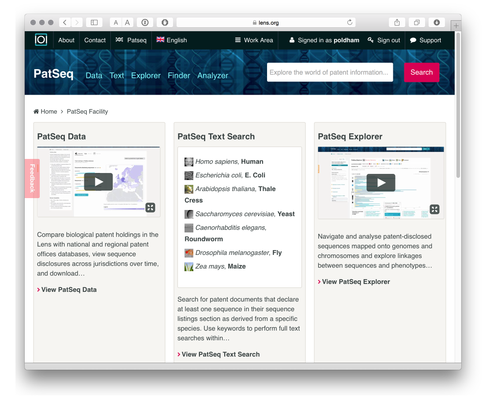
Patseq includes a number of tools.
- PatSeq data permits access to patent documents disclosing sequences available for bulk download from a growing number of countries. This is a very useful site for obtaining sequence data. Note that you will need to request access to download sequence data in your account area.
- Species finder and keyword search focuses on searching documents that contain a sequence for a species name or key term.

A series of patent portfolios have been generated for some major plant and animal species, e.g. rice, maize, humans, chickens etc. That can be downloaded as collections.
- The PatSeq Explorer allows the exploration of sequence data for four genomes (at present), notably the human and mouse genome for animals and the soybean, maize and rice genome for plants.

This is an area where researchers with Cambia, the non-profit organisation behind the Lens, have invested considerable effort and it is well worth reading the research articles listed on the Cambia and Lens websites on this topic. PatSeq Analyzer is closely related to the Explorer and presently provides details on the genomes mentioned above with a detailed summary of sequences by document including the region, sequence, transcript, single nucleotide polymorphisms (SNPs) and grants with sequences in the patent claims.
- PatSeq Finder
The PatSeq Finder allows a user to enter a DNA or amino acid sequence into the search box and find applications and grants with identical or similar sequences. We selected a sequence at random from the WIPO Patentscope sequence listings browser W016/026850.
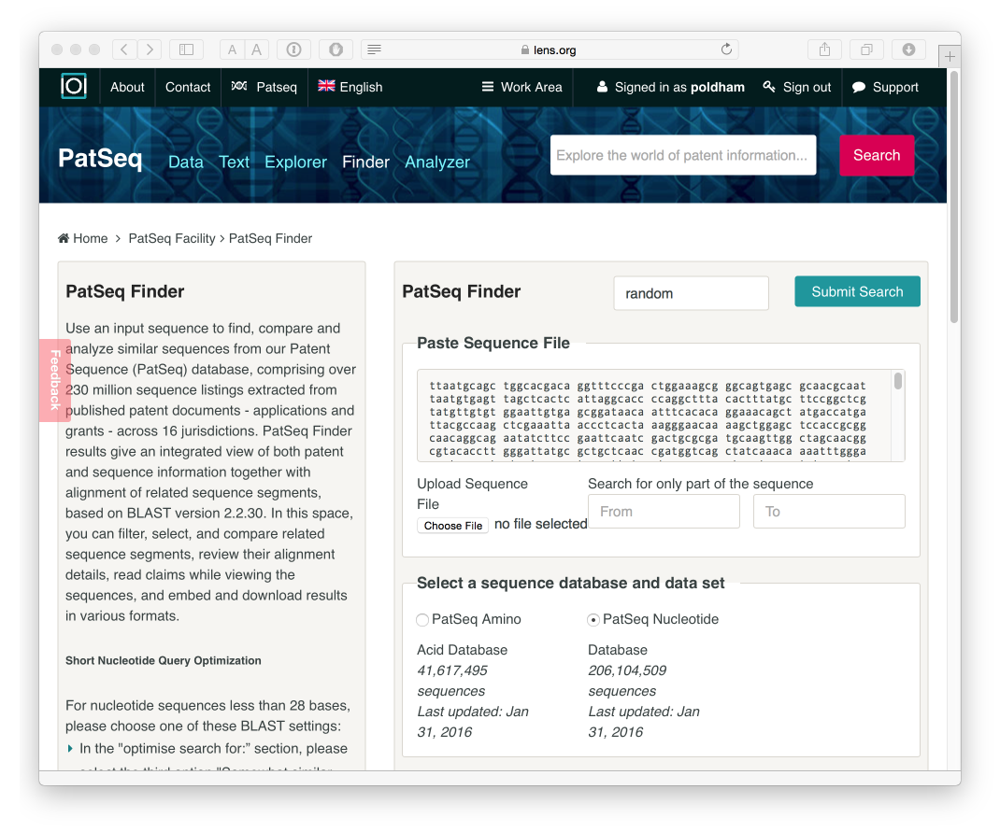
After processing we will see a list of results that can be downloaded in a variety of formats. The results indicate that our random sequence does not appear in the claims of a granted patent or a patent application but does appear in a number of applications and grants. Further details are provided by hovering over the individual entries and additional controls are available for similarity and other scores to refine the results.

As far as we could tell, while the data can be downloaded, it is not presently possible to generate a collection of documents from the results of the PatSeq Finder.
##Round Up
The Lens is a very useful patent database that, when you have worked out the meaning of icons, is easy to use. The ease with which collections can be shared and up to 10,000 records downloaded is a real plus for the Lens. In addition, the use of HTML5 and Highcharts makes this a highly interactive experience. The ability to use charts to drill down into the data is very welcome. The link to the crossref service for non-patent literature is very useful but it would be good to see this data included in some way as a field in the data downloads.
With the addition of data downloads (in 2015) the Lens is becoming a very useful platform for searching, refining, visualizing and downloading patent data. What would perhaps be useful would be a set of demonstration walkthroughs or use cases that explain the way in which the Lens can be used in common work flows. For example, developing and refining a search, testing results, then retrieving backward and forward citations for refinement and visualization are quite common tasks in patent landscape analysis. Use cases would help users make the most of what the Lens has to offer.
The Lens also stands out for its distinctive long term work on sequence data in patents and this will be of particular interest to researchers working on biotech particularly in exploring the analytical tools.
#Patentscope
##Introduction
Patentscope is the WIPO public access database. It includes coverage of the Patent Cooperation Treaty applications (administered by WIPO) and a wide range of other countries including the European Patent Office, USPTO and Japan totalling 51 million patent documents including 2.8 million PCT applications.
In this article we cover the basics of using Patentscope to search for and download up to 10,000 records. A detailed User’s Guide provides more details on specific features. A set of video tutorials are also available. When compared with other free services Patentscope has the following main strengths.
- Full text search in the description and claims of PCT applications on the day of publication and patent applications from a wide range of other countries including the United States, Japan, China and the European Patent Office among others.
- Download up to 10,000 records
- Expand search terms into multiple other languages using
Cross Lingual Expansionor CLIR - Simple, Advanced and Combined Field searching
- Accessible in multiple languages and a WIPO Translate text function
- Mobile version and https: access
- Sequence listing downloads
- Green technologies through the IPC Green Inventory
- Different types of graphical analysis of results lists on the fly using the Options menu.
To get the most out of Patentscope it is a good idea to consult the two detailed guides and the video tutorials:
- Patentscope Search: The User’s Guide.
- Patentscope CLIR for the Cross-Lingual Information Retrieval Tool here.
- Patentscope video tutorials
If you would like to download patent or sequence data you will need to register for a free account. To register for a free account go here.
##Collections to Search
Perhaps the best place to start is with the collections we will be searching. Those can be accessed under the Options menu on the main menu and then the tab reading office.

We can see here that Patentscope provides access to the Patent Cooperation Treaty collection, regional collections such as the ARIPO and the European Patent Office and national collections such as the United States, Japan and Others. The ability to search and retrieve data from the LATIPAT collection will be particularly useful for researchers in Latin America and could be linked to analysis using the espacenet version of LATIPAT. If you are only interested in particular collections, this is the place to change the settings.
##Simple Search
We can select a range of different fields for search. In this case we have selected full text from the drop down menu for a simple search on the term pizza.

Note that Patentscope groups documents for the same application into a record or dossier and that we are seeing the document that is the key for the record. The other documents in the dossier for the record can be accessed by clicking the document number and selecting the Documents menu as in this example.
For more details on using simple search see the Simple Search video tutorial. Videos are also available on the use of Field Combinations for constructing searches and Advanced Search.
##Results
When we arrive at the results page we can see that we have 24,614 results with our query displaying as searching AllTXT and all languages. We then have an RSS button to copy the feed over to an RSS feeder for updates.

There is also a query tree button that displays results by language and terms in the relevant sections of the document. We can see an example of this for a more complex query below.

A video tutorial is also available for the Search result list
##Downloading Results
The two excel icons at the end of the menu allow a user to download either the short list (first icon) or the second list as a .xls file. To see these icons you must be logged in with a user account or they will not display.

When we download these results we will receive an .xls sheet with up to 10,000 entries with a couple of header rows that show the query. Note that each record in the Excel sheet is hyperlinked to the corresponding record in Patentscope.

We will go into the use of this data, including with Tableau Public and other tools, in some depth and there are a few things to note here. The first is that the hyperlinked publication number does not possess a kind code (A1, B1 etc.). This only matters in the sense that the number will retrieve multiple documents in other databases linked to the Patentscope number. A second point to note is that Patentscope data is raw in the sense that it is data as it comes from the data providers and is not processed. That means that there can be encoding issues that we will come back to later on in the discussions on data cleaning.
What is very useful about Patentscope is that we can actually obtain quite a significant volume of data on a topic of interest. While this article has simply downloaded the first 10,000 results, to obtain the full result set it would be easy enough to limit the data by year and download the data as a series of sets that can be combined later (e.g. three sets).
To do this we need to visit the Field Combination Page. Here we will start by putting our query in English All to gain the total number of results. Then we will restrict the data by the publication data field using [] and period between dates (as DD.MM.YYYY). An example is shown below.

This will helpfully show the total results for the query (although it can take some time) and we can run and then download results for each year limited segment.

When working with multiple downloads it is a good idea to write down the total number of results and then the results for each date limited segment to ensure that the data adds up to what you would expect. Some experimentation may also be needed with the field settings using the Boolean AND/OR operators.
##Cross Lingual Searching
One challenge in patent searching is the use of different expressions in different languages for the same query. Patentscope presents a very useful solution to this through cross-lingual searching. From the pull down menu select Cross Lingual Expansion, then enter the search terms and press go. The tool will now generate search terms in multiple languages.

To go further with this tool use either the slider settings (precision vs. recall). For example, if we were to insert the search term “synthetic biology” and move recall to the top level (4), we would generate the following query.
"FP:((EN_TI:("synthetic biology" OR "biologic synthetic") OR EN_AB:("synthetic biology" OR "biologic synthetic")) OR (DE_TI:("synthetische Biologie" OR "synthetischen biologischen" OR "biologische synthetische" OR "Biologische synthetische") OR DE_AB:("synthetische Biologie" OR "synthetischen biologischen" OR "biologische synthetische" OR "Biologische synthetische")) OR (ES_TI:("biológicas sintéticas") OR ES_AB:("biológicas sintéticas")) OR (FR_TI:("biologie synthétique" OR "biologie synthéthique") OR FR_AB:("biologie synthétique" OR "biologie synthéthique")) OR (JA_TI:("生物合成" OR "合成生体" OR "の生物学的合成") OR JA_AB:("生物合成" OR "合成生体" OR "の生物学的合成")) OR (ZH_TI:("合成生物") OR ZH_AB:("合成生物")))"
If supervised mode is selected from the Expansion mode drop down, it becomes possible to select technology areas for the generation of terminology. While we haven’t worked through this in detail that could be very helpful for domain specific query generation. All in all, this is one of the most original and powerful tools that Patentscope has to offer. A detailed .pdf guide to using CLIR is available here.
##Sequence Data
A third major feature of Patentscope is access to DNA and amino acid sequence listings filed with PCT Applications. This data can be accessed and downloaded for individual records here.

A sample record from the lists can be seen below as a plain text file. Note that some issues may arise with reconciling the plain text file with the WIPO publication number (WO etc.) and this merits careful attention if using this data.

Registered account holders can also use the ftp anonymous download service from the same page. This provides access to the sequence data by year as can be seen below.

If using the anonymous ftp service note that the recent data is measured in gigabytes, so do not try to download this data over a weak WIFI connection, a gated connection or to your phone(!). Nevertheless, the open accessibility of this data is important. For other sequence data sources you may be interested in the European Bioinformatics Institute resources here and for the US by document number here and until March 2015 at the DNA Patent Database here. Also important is the Lens Patseq tool here.
##Round Up
WIPO Patentscope is a powerful tool for gaining access to a significant amount of patent data on a topic of interest. The ability to download 10,000 or more records at a time cannot be beaten by other free tools. The Cross Lingual Searching tool appears to be unique and valuable. Free access to bulk download of sequence data is likely to keep bioinformaticians happy for quite a long time.
One way of thinking about the role of Patentscope in patent analytics is as a resource that can be combined with other data tools. For example, if we wanted to obtain the abstracts, descriptions or claims of PCT documents in Patentscope then we might use the Patenscope numbers to retrieve data from EPO Open Patent Services or Google Patents using R or Python or other tools. That is, in this case Patentscope overcomes the limitations of search results from other tools but allows for the targeted use of other tools to retrieve more information. The Cross Lingual Searching tool could also be particularly useful for trying to identify and later acquire patent documents from other jurisdictions where a company or organisation may be seeking to operate or to expand patent landscape analysis into jurisdictions with non-Roman alphabets.
The main difficulties that arise from using Patentscope can stem from occasional noise in the data. Patenscope does not clean the data provided from the individual collections with the exception of checking for typological errors in priority numbers and IPC codes. In addition, all text is transformed into UTF-8. However, as is common when dealing with diverse data sources, the results are not always perfect. In addition, because Patentscope data is drawn from a wide range of languages users may need to update their font libraries if large numbers of unusual characters appear in the data (such as installing the Asian language pack for Windows). In practice, as is common with most patent data sources, this can mean significant time is required to clean up the data. Having said this, no other free database tool allows us to download as much data in table form for analysis. As we will see, it is possible to do a lot with Patentscope data.
Cleaning patent data is one of the most challenging and time consuming tasks involved in patent analysis. In this chapter we will cover.
- Basic data cleaning using Open Refine
- Separating a patent dataset on applicant names and cleaning the names.
- Exporting a dataset from Open Refine at different stages in the cleaning process.
Open Refine is an open source tool for working with all types of messy data. It started life as Google Refine but has since migrated to Open Refine. It is a programme that runs in a browser on your computer but does not require an internet connection. It is a key tool in the open source patent analysis tool kit and includes extensions and the use of custom code for particular custom tasks. In this article we will cover some of the basics that are most relevant to patent analysis and then move on to more detailed work to clean patent applicant names.
The reason that patent analysts should use Open Refine is that it is the easiest to use and most efficient free tool for cleaning patent data without programming knowledge. It is far superior to attempting the same cleaning tasks in Excel or Open Office. The terminology that is used can take some getting used to, but it is possible to develop efficient workflows for cleaning and reshaping data using Open Refine and to create and reuse custom codes needed for specific tasks.
In this chapter we use Open Refine to clean up a raw dataset from WIPO Patentscope containing nearly 10,000 raw records that make some kind of reference to the word pizza in the whole text. To follow this chapter using one of our training sets, download it from the Github repository here or use your own dataset.
3.1 Install Open Refine
To install Open Refine visit the Open Refine website and download the software for your operating system:

From the download page select your operating system. Note the extensions towards the bottom of the page for future reference.
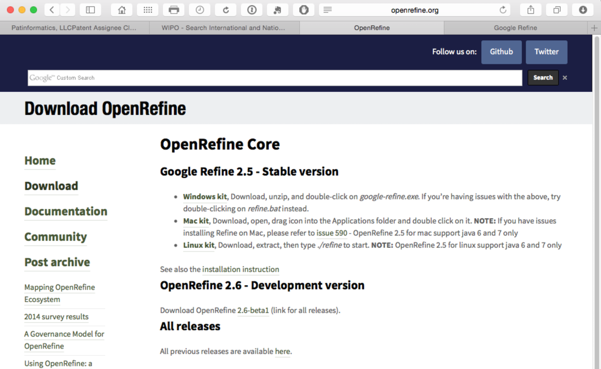
At the time of writing, when you download Open Refine it actually downloads and installs as Google Refine (reflecting its history) and so that is the application you will need to look for and open.
3.2 Create a Project
We will use the Patentscope Pizza Medium file that can be downloaded from the repository here.

The file will load and then attempt to guess the column separator. Choose .csv. Note that a wide range of files can be imported and that there are additional options such as storing blank cells as nulls that are selected by default. In the dataset that you will load we have prefilled blank cells with NA values to avoid potential problems using fill down in Open Refine discussed below.

Click create project in the top right of the bar as the next step.
3.3 Open Refine Basics
A few basic features of Open Refine will soon have you working smoothly. Here is a quick tour.
###Open Refine runs in a browser
Open Refine is an application that lives on your computer but runs in a browser. However, it does not require an internet connection and it does not lose your work if you close the browser.
###Open Refine works on columns.
At the top of each column is a pull down menu. Be ready to use these menus quite a lot. In particular, you will often use the Edit cells > Common tranforms as shown below for functions such as trimming white space.

Other important menus are Edit column, immediately below Edit cells, for copying or splitting columns into new columns.
###Open Refine works with Facets.
The term facet may initially be confusing but basically calls up a window that arranges the items in a column for inspection, sorting, and editing as we can see below. This is important because it becomes possible to identify problems and address them. It also becomes possible to apply a variety of clustering algorithms to clean up the data. Note that the size of the facet window can be adjusted by dragging the bottom of the window as we have done in this image.

Hovering over an item inside the facet window brings up a small edit button that allows editing, such as removing and from the title.
###Custom Facets
The Facet menu below brings up a custom menu with a range of options. Selecting Custom text facet (see below) brings up a pop up that allows for the use of code in Open Refine Expression Language (GREL) to perform tasks not covered by the main menu items. This language is quite simple and can range from short snippets for finding and replacing text to more complex functions that can be reused in future. We will demonstrate the use of this function below.
###Reordering Columns
There are two options for reordering columns. The first is to select the column menu then Edit column > Move column to beginning. The second option, shown below, is to select the All drop down menu in the first column and then Edit columns > Re-order/remove columns. In the pop up menu of fields drag the desired field to the top of the list. In this case we have dragged the priority_date column to the top of the list. It will now appear as the first data column.

###Undo and Redo
Open Refine keeps track of each action and allows you to go back several steps or to the beginning. This is particularly helpful when testing whether a particular approach to cleaning (e.g. splitting columns or using a snippet of code) will meet your needs. In particular it means you can explore and test approaches while not worrying about losing your previous work.

However, it can be important to plan the steps in your clean up operation to avoid problems at later stages. It may help to use a notepad as a checklist (see below). The main issue that can arise is where cleanup moves forward several steps without being fully completed in an earlier step. In some cases this can require returning to that earlier step, restarting and repeating earlier steps. As you become more familiar with Open Refine it will be easier to work out an appropriate sequence for your workflow.
###Exporting
When a clean up exercise is completed a file can be exported in a variety for formats. When working with patent data expect to create more than one file (e.g. core, applicants, inventors, IPC) to allow for analysis of aspects of the data in other tools. In this chapter we will create two files.
- A cleaned version of the original data
- An applicants file that separates the data by each applicant.
##Basic Cleaning
This is the first step in working with a dataset and it will make sense to perform some basic cleaning tasks before going any further. The Pizza Medium dataset that we are working with in this article is raw in the sense that the only cleaning so far has been to remove the two empty rows at the head of the data table and to fill blank cells with NA values. The reason that it makes sense to do some basic cleaning before working with applicant, inventor or IPC data is that new datasets will be generated by this process.
Bear in mind that Open Refine is not the fastest programme and make sure that you allocate sufficient time for the clean up tasks and are prepared to be patient while the programme runs algorithms to process the data. Note that Open Refine will save your work and you can return to it later.
When working with Open Refine we will typically be working on one column at a time. However, the key checklist for cleaning steps is:
- Make sure you have a back up of the original file. Creating a
.zipfile and marking it with the namerawcan help to preserve the original. - Open and save a text file as a
code bookto write down the steps taken in cleaning the data (e.g. pizza_codebook.txt). - Regularise characters (e.g. title, lowercase, uppercase).
- Remove leading and trailing white space.
- Address encoding and related problems.
Additional actions:
- Transform dates
- Access additional information and create new columns and/or rows.
We will generally approach these tasks in each column and steps 6 and 7 will not always apply. The creation of a codebook will allow you to keep a note of all the steps taken to clean up a dataset. The codebook should be saved with the cleaned dataset (e.g. in the same folder) as a reference point if you need to do further work or if colleagues want to understand the transformation steps.
###Changing case
The first column in our Patentscope pizza dataset is the publication number. To inspect what is happening and needs to be cleaned in this column we will first select the column menu and choose text facet from the dropdown. This will generate the side menu panel that we can see below containing the data. We can then inspect the column for problems.

When we scroll down the side panel we can see that some publication numbers have a lowercase country code (in this case ea rather than EA for Eurasian Patent Organization using the WIPO standardized country codes). To address this we select the column menu Edit cells > Common transforms > to Uppercase.

If we scroll down all the publication numbers will have been converted to upper case. This will make it easier to extract the publication country codes at a later stage.
###Regularise case
For the other text columns it is sensible to repeat the common transformations step and select to titlecase. Note that this will generally work well for the title field but may not always work as well on concatenated fields such as applicants and inventor names. Repeat this step following the separation of these concatenated fields (see below on applicants). If the abstract or claims were present we would not regularise those text fields.
###Remove leading and trailing whitespace
To remove leading and trailing white space in a column we select Edit cells > Common transforms > Trim leading and trailing white space across the columns.

Note that following the splitting of concatenated cells with multiple entries such as the applicants and the inventors fields it is a good idea to repeat the trim exercise when the process is complete to avoid potential leading white space at the start of the new name entries.
###Add Columns
We can also add columns by selecting the column menu and Edit Column > Add column based on this column. In this case we have added a column called publication_date.

We have a number of options with respect to dates (see below). In this case we want to separate out the date information into separate columns. To do that we can use Edit column > Split into several columns. We can also choose the separator for the split, in this case . and whether to keep or delete the source column. In this case we selected to retain the original column and created three new date related columns. We could as necessary then delete the date and month column if we only needed the year field.

We can then rename these columns using the edit Edit Column > Rename this column. Note that in this case the use of lowercase and underscores marks out columns we are creating or editing as a flag for internal use informing us that this is a column that we have created. At a later stage we will rename the original fields to mark them as original.

###Address Encoding and related problems
The Recipes section of the documentation provides helpful tips and example code for dealing with encoding and related problems that are reproduced here:
- corrupted characters. This arises from aggregation of data from different sources. In Patentscope the data is converted to UTF8. However, if problems are encountered select
Edit cells > Transformand try entering the following.
It may be necessary to explore and test other sets which can be identified here.
- Escape html/XML characters e.g. &
The most likely source of patent data is XML but to be on the safe side the following should escape (remove) html and XML code appearing in the text.
- Question marks
Question marks often show up for characters that cannot be represented are a sign of encoding problems. In addition non-breaking spaces may be represented as   (Unicode(16)). To find a Unicode value go to Edit cells > Transform and then enter unicode(value) which will transform all the characters to unicode numbers. From there you can look up the problem.
A quick fix is proposed in the documentation that may work in some circumstances.
Within this particular dataset, we found that these quick tips did not work (presumably because the text had already been converted to UTF-8). However, if all else fails an alternative is to simply find and replace in Transform as in the example below.
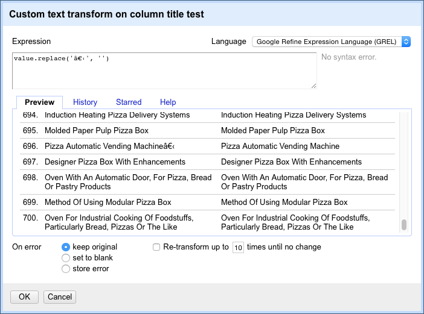
This is not a very satisfactory solution because it requires inspection of the dataset to identify the specific character problems and then replacing the value. That will be time consuming.
###Reformatting dates
One problem we may encounter is that the standard date definition on patent documents (e.g. 21.08.2009) may not be recognised as a date field in our analysis software because dates can be ambiguous from the perspective of software code. For example, how should 08/12/2009 or 12/08/2009 be interpreted?
Alternatively, as in this case, the decimal points may not be correctly interpreted as signifying a date in some software (e.g. R). We might anticipate this and transform the data into a more recognisable form such as 21/08/2009. A very simple way to do this is by using a replace function. In this case we select the menu for the publication_date field and then Edit cells > Transform.

This produces a menu where we enter a simple GREL replace code.

This simple replace code is basically the same as find and replace in Excel or Open Office. In addition, we can see the consequences of the choice in the panel before we run the command. This is extremely useful for spotting problems. For example, if attempting to split a field on a comma we may discover that there are multiple commas in a cell (see the Priority Data field for this). By testing the code in the panel we could then work to find a solution or edit the offending texts in the main facet panel.
To find other simple codes visit the Open Refine Recipes page.
We will now focus on extracting information from some of the columns before saving the dataset and moving on.
###Access additional information
There are a range of pieces of information that are hidden in data inside columns. For example, Patentscope data does not contain a publication country field. In particular, note that Patentscope merges all publications for an application record into one dossier. So we are only seeing one record for a set of documents (in Patentscope the wider dossier for a record is accessible through the Documents section of the website). This is very helpful in reducing duplication but it is important to bear in mind that we are not seeing the wider family in our data table. However, we can work with the information at the front of the publication number in the Patentscope records using a very simple code and create a new column (as above) based on the values returned as below.

Note here that the code begins counting from 0 (e.g. 0, 1 = U, 2 = S). The first part of the code looks in the value field. 0 tells the code to begin counting from 0 and the 2 tells it to read the two characters from 0. We could change these values, e.g to 1 and 4 to capture only a chunk of a number.
##Fill blank cells
Filling blank cells with a value (NA for Not Available) to prevent calculation problems with analysis tools later can be performed by selecting each column, creating a text facet, scrolling down to the bottom of the facet choosing (blank), edit and then entering NA for the value.

Note that this is somewhat time consuming (until a more rapid method is found) but has the benefit of being accurate. It is generally faster to open the file in Excel (or Open Office) and use find and replace with the find box left blank and NA in the replace field across the data table. For that reason, blank cells should not appear in the dataset you are using in this article. However, in later steps below we will be generating blank cells by splitting the applicant and inventor field. It is therefore important to know this procedure.
##Renaming columns
At this stage we have a set of columns that are mixed between the original sentence case and the additions in lower case with no spaces such as publication_number. This is a matter of personal preference but it is generally a good idea to regularise the case of all columns to make them easy to remember. In this case we will also add the word original to the columns to distinguish between those created by cleaning the data and those we have created.
##Exporting Data
When we are happy that we have worked through the core cleaning steps it is a good idea to export the new core dataset. It is important to do this before the steps described below because it preserves a copy of the core dataset that can be used for separation (or splitting activities) on applicants, inventors, IPC etc. during the next steps. It is important that this clean dataset is as clean as is reasonably possible before moving on. The reason for this is that any noise or problems will multiply when we move on to the next steps. This may require a major rerun of the cleaning steps on later files created for applicants or inventors. Therefore make sure that you are happy that the data is as clean as is reasonably possible at this stage. Then choose export from the menu and the desired format (preferably .csv or .tab if using analytics tools later).
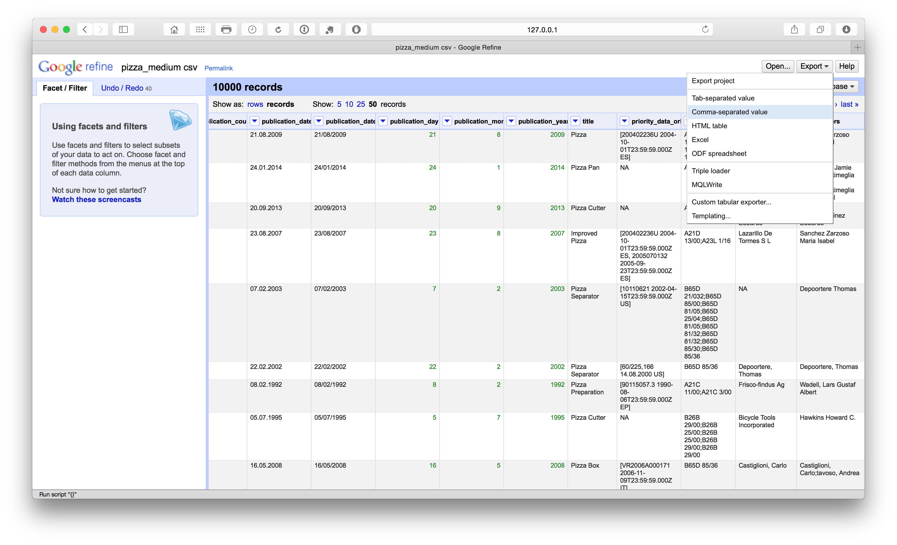
##Splitting Applicants
This article was inspired by a very useful tutorial on cleaning assignee names with Google Refine by Anthony Trippe. Anthony is also the author of the forthcoming WIPO Guidelines for Preparing Patent Landscape Reports and the Patentinformatics LLC website has played a pioneering role in promoting patent analytics. We will take this example forward using the our sample pizza patent dataset so that it can be visualised in a range of tools. If you have not done so already, you can download the dataset here.
We actually have two options here and we will go through them so that you can work out your needs in a particular situation. Note that you can use Undo in Google Refine to go back to the point immediately before you tested these approaches. However, if you have followed the data cleaning steps above, make sure that you have already exported a copy of the main dataset.
###Situation 1 - First Applicants
As discussed by Anthony Tripp we could split the applicant column into separate columns by choosing, Applicants > Edit column > Split into several columns.

We then need to select the separator. In this case (and normally with patent data), it is ;.

This will produce a set of 18 columns.

At this point, we could begin the clustering process to start cleaning the names that is discussed in situation 2. However, the disadvantage with this is that with this size of dataset we would need to do this 18 times in the absence of an easy way of combining the columns into a single column (applicants) with a name on each row. We might want to use this approach in circumstances where we are not focusing on the applicants and are happy to accept the first name in the list as the first applicant. In that case we would simply be reducing the applicant field to one applicant. Bear in mind that the first applicant listed in the series of names may not always be the first applicant as listed on an application and may not be an organisation name. Bearing these caveats in mind, we might also use this approach to reduce the concatenated inventors field to one inventor. For general purposes that would be clean and simple for visualisation purposes.
However, if we wanted to perform detailed applicant analysis for an area of technology, we would need to adopt a different approach.
###Situation 2 - All Applicants
One of the real strengths of Open Refine is that it is very easy to separate applicant and inventor names into individual rows. Instead of choosing Edit column we now choose Edit cells and then split multi-valued cells.

In the pop up menu choose ; as the separator rather than the default comma.
We now have a dataset with 15,884 rows as we can see below.

The advantage of this is that all our individual applicant names are now in a single column. However, note that the rest of the data has not been copied to the new rows. We will come back to this but as a precaution it is sensible to fill down on the publication number column as the key that links the individual applicants to the record. So let’s do that for peace of mind by selecting publication number > edit cells > fill down.

We should now have a column filled with the publication number values for each applicant as our key. Note here that there is a need for caution in using fill down in Open Refine as discussed in detail here. Basically, fill down is not performed by record, it simply fills down. That can mean that data becomes mixed up. This is another reason why it is important to fill blank values with NA either before starting work in Open Refine or as one of the initial clean up steps. Using NA early on will help prevent refine from filling down blank cells with the values of another record.
If you have not already done so above to assist the clean up process, and as general good practice, transform the mixed case in the applicants field to a single case type. To do that select Applicants > Edit Cells > Common Transformations > To titlecase.

We now move back to the applicants and select Facet > Text Facet.

What we will see (with Applicants moved to the first column by selecting Applicants > Edit Column > Move column to beginning) is a new side window with 9,368 choices.

The cluster button will trigger a set of six clean up algorithms with user choices along the way. It is well worth reading the documentation on these steps to decide what will best fit your needs in future. These cleaning steps proceed from the strict to the lax in terms of matching criteria. The following is a brief summary of the details provided in the documentation page:
- Fingerprinting. This method is the least likely in the set to produce false positives (and that is particularly important for East Asian names in patent data). It involves a series of steps including removing trailing white space, using all lowercase, removing punctuation and control characters, splitting into tokens on white space, splitting and joining and normalising to ASCII.
- N-Gram Fingerprint. This is similar but uses n-grams (a sequence of characters or multiple sequences of characters) that are chunked, sorted and rejoined and normalised to ASCII text. The documentation highlights that this can produce more false positives but is food for finding clusters missed by fingerprinting.
- Phonetic Fingerprint. This transforms tokens into the way they are pronounced and produces different fingerprints to methods 2 & 3.
- Nearest Neighbour Methods. This is a distance method but can be very very slow.
- Levenshtein Distance. This famous algorithm measures the minimal number of edits that are required to change one string into another (and for this reason is widely known as edit distance). Typically, this will spot typological and spelling errors not spotted by the earlier approaches.
- PPM a particular use of Kolmogorov complexity as described in this article that is implemented in Open Refine as
Prediction by Partial Matching.
It is important to gain an insight into these methods because they may affect the results you receive. In particular, caution is required on East Asian names where cultural naming traditions produce a lot of false positive matches on the same name for persons who are actually distinct persons (synonyms or “lumping” in the literature). This can have very dramatic impacts on the results of patent analysis for inventor names because it will treat all persons sharing the name Smith, John or Wang, Wei as the same person, when in practice they are multiple individual people.
We will now walk through each algorithm to view the results.

This identifies 1187 clusters dominated by hidden characters in the applicants field (typically appearing after the name). At this stage we need to make some decisions about whether or not to accept or reject the proposed merger by checking the Merge? boxes.
This step was particularly good at producing a match on variant names and name reversals as we can see here.

It pays to manually inspect the data before accepting it. One important option here is to use the slider on Choices in Cluster to move the range up or down and then make a decision about the appropriate cut off point. Then use select all in the bottom left for results you are happy with followed by Merge Selected & Re-Cluster. In the next step we can change the keying function dropdown to Ngram-fingerprint.
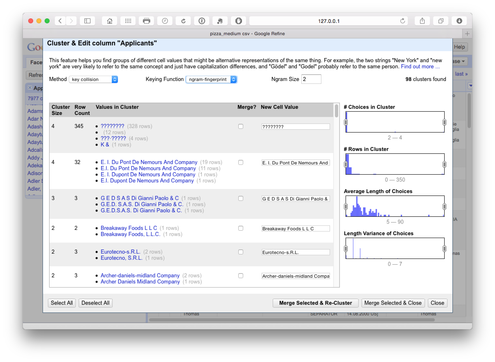
This produces 98 clusters which inspection suggests are very accurate. The issues to watch out for here (and throughout) are very similar names for companies that may not be the same company (such as Ltd. and Inc.) or distinct divisions of the same company. It is also important, when working with inventor names, not to assume that the same name is the same inventor in the absence of other match criteria, or that apparently minor variations in initials (e.g. Smith, John A and Smith, John B) are the same person because they may well not be.
To see these potential problems in action try reducing the N-gram size to 1. At this point we see the following.

This measure is too lax and is grouping together companies that should not be grouped. In contrast increasing the N-gram value to 3 or 4 will tighten the cluster. We will select all on N-gram 2 and proceed to the next step.
At this point it is worth noting that the original 9,368 clusters have been reduced to 7,875 and if we sort on the count in the main window then Google is starting to emerge as the top applicant across our set of 10,000 records.
###Phonetic Fingerprint (Metaphone 3) clustering
As we can see below, Metaphone 3 clustering produces 413 looser clusters with false positive matches on International Business Machines but positive matches on Cooperative Verkoop.
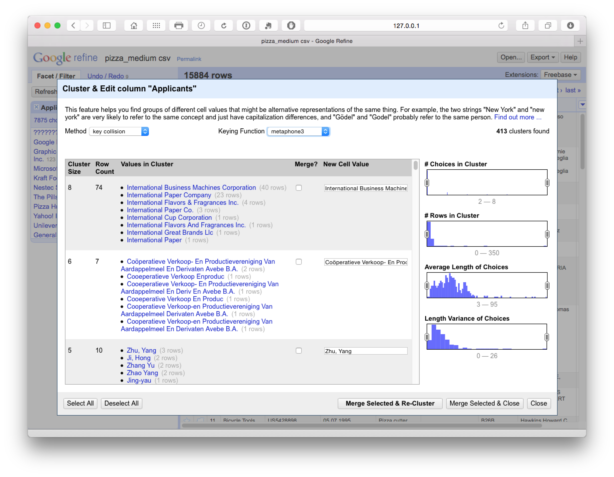
At this point we could either manually review the 413 clusters and select as appropriate or change the settings to reduce the number of clusters using the Choices in Clusters slider until we see something manageable for manual review. At this stage we might also want to use the browse this cluster function that appears on hovering over a particular selection, to review the data (see the second entry in the image below).

In this case we are attempting to ascertain whether the Korea Institute of Oriental Medicine should be grouped with the Korea Institute of Science and Technology (which appears unlikely). If we open the browser function we can review the entries for shared characteristics as possible match criteria.

For example, if the applicants shared inventors and/or the same title we may want to record this record in the larger grouping (remembering that we have exported the original cleaned up data). Or, as is more likely, we might want to capture most members of the group and remove the Korea Institute of Oriental Medicine. However, how to do this is not at all obvious.
In practice, selection of items at this stage feeds into the next stage of cleaning using the Cologne-phonetic algorithm. As we can see below, this algorithm identified 271 clusters that were almost entirely clustered on the names of individuals with a limited number of accurate hits.
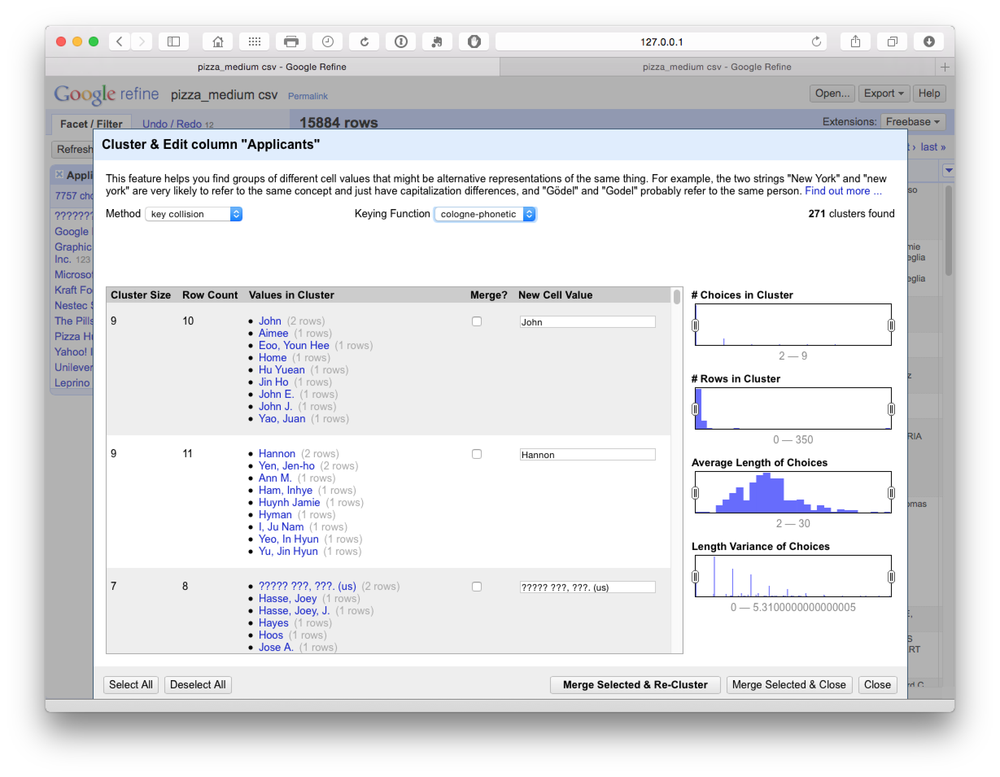
###Levenshtein Edit Distance
The final steps in the process focus on Nearest Neighbour matches for our reduced number of clusters. Note that this may take some time to run (e.g. 10-15 minutes for the +7,000 clusters in this case). The results are displayed below
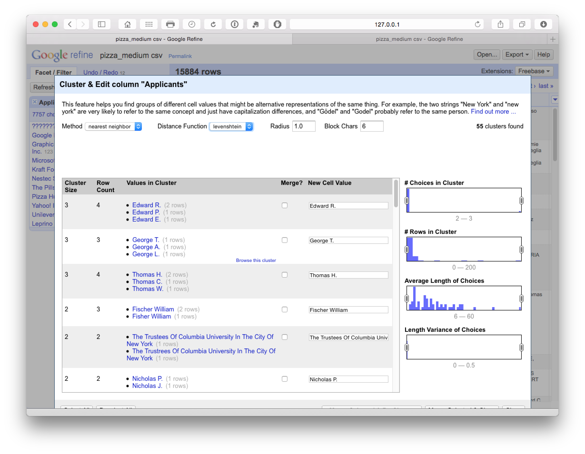
In some cases the default settings matched individual names on different initials, but in the majority of cases the clusters appeared valid and were accepted. In this case particular caution is required on the names of individuals and browsing the results to check the accuracy of matches.
###PPM
The PPM step is the final logarithm but took so long that we decided to abandon it relative to the likely gains.
###Preparing for export
In practice, the cleaning process will generate a new data table for export that focuses on the characteristics of applicants. To prepare for export with the cleaned group of applicant names there will be a choice on whether to retain the publication number as the single key, or, whether to use the fill down process illustrated above across the columns of the dataset. It is important to note that caution is required in the blanket use of fill down.
It is also important to bear in mind that the dataset that has been created contains many more rows than the original version. Prior to exporting we would therefore suggest two steps:
- Rerun Common transforms > to title case, to regularise any names that may have been omitted in the first round and rerun trim whitespace for any spaces arising from the splitting of names.
- Rerun facets on each column, select blank at the end of the facet panel and fill with NA. Alternatively, do this immediately following export.
##Round Up
In this chapter we have covered the main features of basic data cleaning using Open Refine. As should now be clear, while it requires an investment in familiarisation it is a powerful tool for cleaning up small to medium sized patent datasets such as our 10,000 pizza patent records. However, a degree of patience, caution and forward planning is required to create an effective workflow using this tool. It is likely that further investments of time (such as the use of regular expressions in GREL) would improve cleaning tasks prior to analysis.
Open Refine is also probably the easiest to use free tool for separating and cleaning applicant and inventor names without programming knowledge. For that reason alone, while noting the caveats highlighted above, Open Refine is a very valuable tool in the open source patent analytics toolbox.
##Useful Resources
The Open Refine website has links to lots of useful resources including video walkthroughs
##Introduction
In this chapter we will be analysing and visualising patent data using Tableau Public.
Tableau Public is a free version of Tableau Desktop and provides a very good practical introduction to the use of patent data for analysis and visualisation. In many cases Tableau Public will represent the standard that other open source and free tools will need to meet.
This is a practical demonstration of the use of Tableau in patent analytics. We have created a set of cleaned patent data tables on pizza patents using a sample of 10,000 records from WIPO Patentscope that you can download as a .zip file from here to use during the walkthrough. Details of the cleaning process to reach this stage are provided in the codebook that can be viewed here. The Open Refine walkthrough can be used to generate cleaned files very similar to those used in this walkthrough using your own data. You will not need to clean any data using our training set files.
This article will take you through the main features of Tableau Public and the types of analysis and visualisation that can be performed using Tableau. In the process you will be creating something very similar to this workbook.
##Installing Tableau
Tableau can be installed for your operating system by visiting the Tableau Public website and entering your email address as in the image below.

While you are waiting for the app to download it is a good idea to select Sign In and then Create one now for Free to sign up for a Tableau Public Account that will allow you to load up your workbooks to the web and share them. We will deal with privacy issues in making workbooks public or private below but as its name suggests Tableau Public is not for sensitive commercial information.

This will lead you to an empty profile page.

While you are there you might want to check out the Gallery of other Tableau Public workbooks to get some ideas on what it is possible to achieve with Tableau. You may want to view a Tableau Workbook for scientific literature that accompanied this PLOS ONE article on synthetic biology. While it is now a few years old it gives an idea of the possibilities of Tableau and the feel of an existing profile page.

##Getting Started
When you first open the application you will see a blank page. Before we load some data, note the helpful How-to-Videos on the right and the link to a visualisation of the day. There are also quite a lot of training videos here and a very useful community forum. If you get stuck, or wonder how somebody produced a cool visualisation, this is the place to go.

To avoid staring at a blank page we now need to load some data. In Tableau Public this is limited to text or Excel files. To download the data as a single .zip file click here or visit the GitHub repository. unzip the file and you will see a collection of .csv files. The excel file and codebook should be ignored as supplementary.

As we can see above there are a number of files in this dataset. The core or reference file is pizza.csv. All other files are aspects of that file, such as applicants, inventors and international patent classification codes. That is concatenated fields in pizza have been separated out and cleaned up. One file, applicants_ipc is a child file of applicants that will allow us to access IPC information for individual applicants. This may not make a lot of sense at the moment but don’t worry it will shortly.
To get started we will select the pizza.csv file:

We will then see a new screen showing some of the data and the other files in the folder. At the bottom is a flag with Go to Worksheet, so let’s do that.

We will now see a screen that is divided in to Dimensions on the left, with Measures below. We can see that in the dimensions there are quite a large number of data fields. Note that Tableau will attempt to guess the type of data (for example numeric or date information is marked with #, geographic data is marked with a globe, text fields are marked with Abc). Note that Tableau does not always get this right and that it is possible to change a data type by selecting a field and right clicking as we can see below.

On the right hand side we can see a floating panel menu. This can be hidden as a menu bar by clicking the x. This panel displays the visualisation options that are available for the data field that we have selected. In this case two map options are available because Tableau has automatically recognised the country names as geographic information. Note that persuading Tableau to present the option that you want (for example visualising year on year data as a line graph) can involve changing the settings for the field until the option you want becomes available.
At the bottom of the screen we will see a worksheet number Sheet 1 and then options for adding three types of sheet:
- A New Worksheet
- A New Dashboard
- A New Story
For the moment we will focus on building worksheets with the data and then move into creating Dashboards and then Stories around our pizza data.
##Publication Trends
One of the first things we normally want to do with patent data is to map trends, either in first filings, publications or family members. In the case of our pizza patents from Patentscope we have a single member of a dossier of files linked to a particular application. This data is fine for demonstration needs and we can easily map trends for this data.
To do that we simply drag the publication year in the dimensions to the columns field and the number of records from the measures field. Note that Tableau automatically counts the number of rows in a set to create this field. If working with data where accurate counts are important it is important to make sure that the data has been deduplicated on the relevant field before starting. While it does not apply in this case, another important tip is to always have a way of checking key counts in Tableau such as using quick pivot tables in Excel or Open Office. We do not need to worry about this now, but while Tableau is clever software it is still software: it will not always perform calculations as you expect them. For that reason a cross check of counts is a sensible if not vital part of a Tableau workflow.
Tableau will guess what we are after and draw a graph.

As we can see we now have a graph that plunges off a cliff as we approach the present and contains one null. Null values are typically rows or columns containing blank cells. If there is only 1 null value then the data can probably be left as is (in this case it was a blank row at the bottom of the dataset introduced during cleaning in R). However, it pays to inspect nulls by right clicking on the file in Data and selecting View data. If there are large numbers of nulls then you may need to go back and inspect the data and ensure that blank cells are filled with NA values. Let’s go back to our graph.
What we see here is the data cliff that is common with patent data. That is, the cliff does not represent a radical decline in the use of the term pizza, it represents a radical decline in the availability of patent data the closer we move to the present day. The reason for this is that it generally, as a rough rule of thumb, takes about 24 months for an application to be published and can take longer for patent databases to catch up. As such, our data cliff reflects a lack of available data in recent years, not a lack of activity. Typically we need to pull back about 2 to 3 years to gain an impression of the trend.
Before we go any further and adjust the axis we will change the graph to something more attractive. To do that we will select filled graph in the floating panel. Behind that panel is a small colour button that will allow us to select a colour we like. The reason that we do this before adjusting the axis is that when we change the graphic type Tableau will revert any changes made to the axis.
Next we right click the x (lower) axis and adjust the time frame to something more sensible such as 1980 to 2013 by selecting the fixed option. As a very rough rule of thumb moving back two or three years from the present will take out the data cliff from the lack of published patent information. Note that if we were counting first filings (patent families) the decline would be earlier and much steeper. These lag effects, and ways to deal with them, have been investigated in detail by the OECD patent statistics team, see in particular work on nowcasting patent data.
We now have a good looking graph with a sensible axis. Note here that if we were graphing multiple trends on the same graph (family and family members) we might prefer a straightforward line graph for the sake of clarity.

We will give this a name Trends and add a new worksheet by clicking the icon next to our existing sheet.
The next piece of information we would like is who the most active applicants are. This will also start to expose issues about the different actors who use the term pizza in the patent system and encourage us to think about ways to drill down into the data to get more accurate information on technologies we might be interested, such as, in this case, pizza boxes and musical pizza boxes in particular.
It is at this point that the work we did in a previous article on separating individual applicant names into their own rows and cleaning them up using Open Refine, becomes important. In this dataset we have taken this a step further using VantagePoint to separate out individuals from organisations. This information is found in the Applicants Organisations field in the dataset. Lets just drop that onto the worksheet as a row and then add the number of records as a column (tip, simply drop it onto the sheet).
At first sight everything seems pretty good. But now we need to rank our applicants. To do that we select the small icon in the menu bar with a stacked bar pointing down.

We now see, as we would in the Excel raw file, that there are a significant number of blank entries for applicants in the underlying data, followed by 85 records for Google and 77 for Microsoft. This is also a very good indicator that there may be multiple uses of the word pizza in the patent system unless these software companies have started selling pizzas online.
In reality this is a partial view of activity by the applicants because elsewhere in the data the names are concatenated together. This is normally more obvious than in the present dataset through the presence of multiple names separated by ;(to see this scroll down to the first entry for Unilever).

To understand why this is a partial view we will now import the applicants.csv file. The correct way to do this is to select the menu called Data then New Data Source and the file applicants.csv.
Next, drag Applicants Orgs All onto the Rows. Note that Tableau is interpreting these titles for us (the original is applicants_orgs_all). Then drag Number of Records from the dimensions onto the sheet or into the columns entry. Now choose the stacked bar icon as above to rank the applicants by the number of records. We will now see the following.

Note the difference between the original applicants field (where Google scored a total of 85 records) and our separated and cleaned field where Google now scores 191 records. In short, before the separation and cleaning exercises we were only seeing 44% of activity in our dataset by Google involving the term pizza. This still does not mean that they have entered the online pizza business… . What it does tell us is that patent analysis that does not separate or split the concatenated data and clean up name variants is missing over 60% of the story when viewed in terms of applicant activity. As this makes clear, the gains from separating or splitting and cleaning data are huge even where, as in this case, the original data appeared to be quite ‘clean’. That appearance was deceptive.
Now we have a clearer view of what is happening with our applicants we can make this more attractive. To do that first select the blue bar in the floating panel. The worksheet will now be presented as ranked bars. Next, drag the number of records from Measures onto the Label button next to Color. That looks pretty good. If we wanted to go a step further we could now turn to the dimensions panel and drag Applicants Orgs All, onto the Color button. The bars will now turn to different colours for each applicant. If this is too bright simply grab the green Applicants Orgs All box from under the buttons menu and move it towards dimensions to remove it. Finally, if we want to adjust the right alignment of the text to the left, then first right click on the name of a company, pick Format then alignment and left. While the default is right align, in practice left align creates more readable labels. To change the default do this with the first worksheet you create before creating any others.
We now have an applicants data table that looks, depending on your aesthetic sensibilities, like this.

At this stage we might want to take a couple of actions. To make the labels more visible, drag the line between the names and the columns to the right. This will open up some space. Next, think about editing long names down to something short. For example, International Business Machines Corporation, who are also not famous for pizzas, is a little bit too long. Right click on the name and select Edit alias as in the image below.

Now edit the name to IBM. As a tip note that where you discover you have missed a duplicate name in clean up (remember that we focus on good enough rather than perfect in data cleaning) it is also possible to highlight two rows, right click, look for a filing clip icon and group two entries onto a new name. However, the resulting named group must be used in all later analysis. It is also important to realise that data cleaning is not a Tableau strength, Tableau is about data analysis and exploration through visualisation. For data cleaning use a tool such as Open Refine.
##Adding New Data Sources
We will follow the same procedure that we used for applicants to add the remaining files as data sources. We will add the following four files (as they appear in the folder in alphabetical order).
- applicants_ipc.csv
- inventors.csv
- ipc_class.csv
- ipc_subclass.detail.csv
To add the data sources either click the Data menu and New Data Source or (faster) the cylinder with a plus sign. Then select Text file, add each file and allow it to load.

If all goes well the Data panel will now contain the following files.

Note here that the applicants data displays a blue tick. This is because it was the last data source that we used and is therefore active. The fields we see in Dimensions belong to that data source. Next click in the bottom menu to create a new worksheet and then click inventors in the Data field. The field names will now change slightly. It is important to keep an eye on the data source that you are using because it is quite easy to drop a field from one data source onto another. In some cases this is a good thing. But, if you receive a warning message you will be attempting to drop a data source on to another data source where there is no matching field. We will come back to this on data blending.
Next follow the same procedure for ranking applicants with inventors using the Inventors All. For anyone interested in seeing the dramatic impacts of concatenated fields try dropping the Inventors Original field onto the worksheet.
Using Inventors All you should now see the following ranked list of inventors.

Now repeat this exercise for the remaining data sources by first creating a sheet and then selecting the data source. As you move through this select the following dimensions to add to the sheet and then drop number of
- applicants_ipc. Drop
Ipc Subclass Detailonto the sheet. Then drop number of records onto the sheet where the field says Abc. Note that a number6will appear in the first row. This is an artifact from the separation process. Select that cell, right click and then chooseExclude.
Do not rank this data, but instead drag the field Applicants Orgs All onto the sheet so that it is the first row (tip, it is easiest to do this by dragging the field into the row bar before the IPC field). You will now see a list of company names followed by a list of IPCs. Congratulations, we now have an idea of who is patenting in a particular area of technology using the word pizza at the level of individual applicants.
Add a new sheet. Then click on ipc_subclass_detail. Note that if you click on the data source first, the dimensions panel will go orange. Don’t panic. The reason is that Tableau thinks you are trying to blend data from the ipc_subclass_detail source with applicants_ipc. If you do this simply click on ipc_subclass-detail again.
- ipc_subclass-detail. Drop the
Ipc Subclass Detaildimension on to the sheet. Then drop the number of records onto the sheet. Then click on the first cell containing6as an artifact and exclude. Repeat for7. Then select the bar chart in the floatingShow Mepanel, then dragNumber of Recordsonto theLabelbutton. Now rank the column using the descending button in the upper menu as before.
At this point, if we had not trimmed the leading white space the ranked list would display indentations and there would be duplicates of the same IPC code. For that reason it is important to trim leading white space before attempting to visualise data (and this applies to all our separated fields).
##Creating an Overview Dashboard
You should now have five worksheets each of which displays aspects of our core pizza set. We have named the sheets as follows and suggest that you might want to do the same. Note that where there is more than one sheet containing similar but distinct information it will be helpful to give them distinct names (e.g. IPC Subclass and Applicants IPC Subclasses). We might even start using less technical labels by calling the IPC something clearer like Technology Area, to aid communication with non-IP specialists

Let’s get a quick overview of the data so far. Next to the add worksheet button in the worksheets bar is a second icon to create a dashboard. Click on that and we will now see a sheet called Dashboard 1.
Dashboards are perhaps Tableau’s best known feature and are rightly very popular. We can fill our dashboard by dragging the worksheets from the Dashboard side menu. The order in which we do this can make life easier or more difficult to adjust later. Let’s do it in the following steps
- Drag
Trendsonto the dashboard and it will now fill the view. - Drag
Organisationsonto the dashboard.

That is rather messy, but all is not lost. Simply click in the top right corner of the organisations panel on the right to remove it (in the original worksheet click on it and select Hide). We now have an Organisations column that still looks crunched.
Now select the top of the organisations box and a small inverted triangle will appear. Click on that and then choose Fit > Fit Width.

The bars may now disappear. Click into the box on the line where the bars start and drag them back into view. At this point long names may start to be obscured. If desired, right click on a long name such as Graphic Packaging International, choose Edit alias and edit it down to something sensible such as Graphic Packaging Int.
We now have two panels on the dashboard. Let’s add two more. First drag technology areas below the line where Trends and Organisations finish. Grey shaded boxes will appear that show the placement, across the width is fine. This can take some time to get right, when the whole of the bottom area is highlighted let go of the mouse. If it goes somewhere strange either select the box and in the top right press x to remove it, or try moving it (in our experience it is often easier to remove it and try again).
Do not try to format this box yet. Instead, grab inventors and drag it into the space before the technology areas below.
We now have four panels in the dashboard but they need some tidying up. First, in the two boxes we have just edited repeat the Fit Width exercise and then drag the line for the bars around until they are in view and satisfactory. Next, we have names such as Applicants Orgs All that are our internal reference names. Click on them in each of the three panels one at a time and select Hide Field Labels for Rows.
Hmm… our Technology Areas panel is proving troublesome because even the edited version of the IPC is rather long.
Before we do any editing, first experiment with the Size menu in the bottom right. The default dashboard size in Tableau Public is actually quite small. Change the settings until you have something that looks cleaner even if there are still some overlaps. Options such as Desktop, Laptop and Large blog are generally decent sizes but in part the decision depends on where you believe it will be displayed.
To fix the long Technology areas labels we go back to the original sheet (tip: if you move the mouse to the top right in the panel an arrow with Go to Sheet will appear, it is very useful for large workbooks). Inside the original sheet, try dragging the line separating the text and bars so that the bars now cover some of the longer text. Then switch back to the dashboard. If you feel unhappy with the result then right click in the panel in the dashboard and then choose Edit alias. This is useful for simply making labels in the view more visible (it does not change the original data).
If all goes well you will now have a dashboard that looks more or less like this. Note that depending on the worksheet settings you may want to make the font size consistent (right click and choose Format, then font size). Note also that if you increase the font size (the default is 8 point) then you may need to edit some of the labels again.

We have now done quite a lot of work and produced an Overview dashboard. It is time to save the workbook to the server before doing anything else.
##Saving, Display and Privacy Settings
The only option for saving a Tableau Public workbook is to save it online. To save the file go to File and Save to Tableau Public. If you want to save the workbook as a new file (after previously saving) then choose Save As.

You will then be asked to enter your username and password (Tableau does not remember the password) and the file will upload. Tableau will then compress the data. As of June 2015 it is possible to store 10GB of data overall and to have up to 10 million rows in a workbook (which is generally more than enough).
Tableau will then open a web browser at your profile page and it will look a lot like this.

Having read the message, click Got it on the right. Do you notice anything strange. Yes, we can only see the Dashboard and not any of the other sheets. To change this and any other details click on edit details near the title and some menus will open up as follows.

To make sure the worksheets are visible select the check box marked Show workbook sheets as tabs and then Save.
To access this demonstration workbook go here.
##Privacy and Security
As emphasised above, Tableau Public is by definition a place for publicly sharing workbooks and visualisations. It is not for sensitive data. In the past users, such as journalists, relied on what might be called ‘security by obscurity’ but the trend towards storing data on a Tableau public profile (the only option) makes that less of an option. If this a concern there are two actions that might potentially be considered that limit the visibility of a workbook and its wider use. Logically, the answer to any concerns about Tableau Public and sensitive information is not to include sensitive information in the first place. The following are not recommendations but simply highlight the available options.
- In the discussion on the settings above, there is a check box to prevent users from downloading a workbook. You might want to select that option where a workbook contains information that you do not want to be seen other than what you choose to make visible.
- It is possible to create a setting so that a workbook does not show up on a user’s profile. This is hard to spot, and appears by hovering over the workbook in the Profile view.
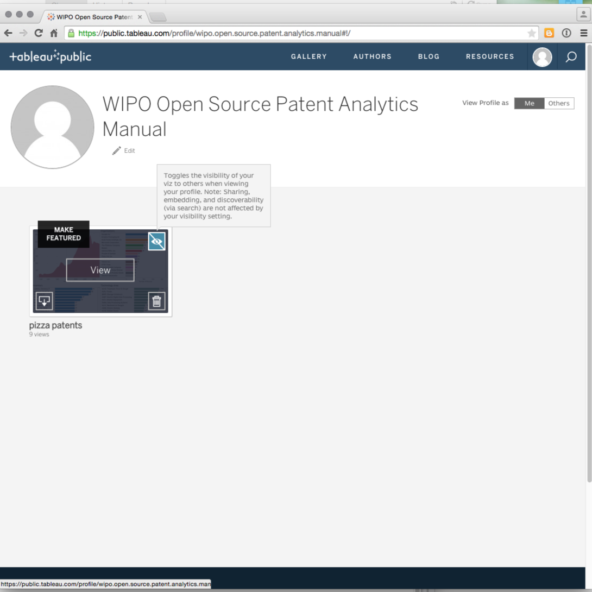
As the message points out using this option does not prevent a workbook being found through search engines or seen by users. It just means it is not visible on the profile page.
As such, Tableau public is fundamentally about sharing information with others through visualisation. That is, it is for information that you want others to see. Here it is briefly worth returning to the completed dashboard above and clicking the share button.

As we can see here, Tableau generates embed codes for use on websites or for emailing as a link along with twitter and facebook.
##Round Up
In this chapter we have introduced the visualisation of patent data using a set of nearly 10,000 patent documents from WIPO Patentscope that mention pizza. As should by now be clear Tableau Public is a very powerful free tool for data visualisation. It requires attention to detail and care in construction but is one of the best free tools that is out there for visualisation and dashboarding.
To take working with Tableau on pizza patents forward on your own here are some tips.
- You already know how to use Tableau to create a map of publication countries.
- The pizza source file contains a set of publication numbers. Try a) creating a visualisation with the publication numbers, b) looking in the pizza source file for a set of URL and then exploring what can be done with
Worksheet > Actionwith that URL. - In dashboards consider using one field as a filter for another field (such as applicant and title). What data source or data sources would you need to do that?
- What kinds of stories does the pizza data tell us and how might we visualise them using the information provided on applicants and its subset Applicants IPCs?
If you get stuck, and it does take time to become familiar with Tableau’s potential, perhaps try exploring this workbook on synthetic biology and the use of Tableau images in this article PLOS ONE article. As a tip, try clicking on the bars and then the titles to understand Actions. Downloading workbooks prepared by others can be a very good way of learning the tips and tricks of tableau visualisation and dashboarding.
If you would like to download the pizza workbook it is here.
However, one of the most important issues exposed by working with Tableau is that you must ensure that fields you want to visualise are tidy, that is not concatenated, and also that they are as clean as it is reasonable to make them. For researchers wishing to work up their own data we suggest the Open Refine article as a good starting point.
#Gephi
This chapter focuses on visualising patent data in networks using the open source software Gephi. Gephi is one of a growing number of free network analysis and visualisation tools with others including Cytoscape, Tulip, GraphViz, Pajek for Windows, and VOSviewer to name but a few. In addition, network visualisation packages are available for R and Python. We have chosen to focus on Gephi because it is a good all round network visualisation tool that is quite easy to use and to learn.
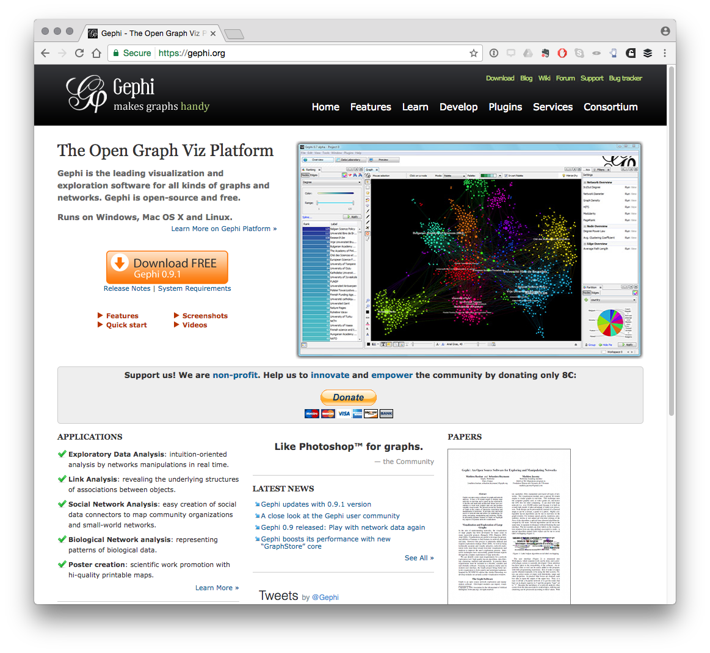
In this chapter we will focus on creating a simple network visualisation of the relationship between patent applicants (assignees). However, network visualisation can be used to visualise a range of fields and relationships, such as inventors, key words, IPC and CPC codes, and citations among other options.
For this chapter we will use a dataset on drones from the Lens patent database. The dataset consists of 5884 patent documents containing the terms “drone or drones” in the full text deduplicated to individual families from the full publication set. The dataset has been extensively cleaned in Vantage Point by separating out applicant and inventor names and then using fuzzy logic matching to clean up names. Very very similar results can be achieved using Open Refine as described in Chapter 9 of this Manual.
The dataset can be downloaded from Github in a zip file to unzip here.
##Installing Gephi
You should install gephi 9.1 (the latest release) rather than an earlier version. Note that any later updates may not contain the key functionality that is needed below (as it takes a while for some of the plugins and features to catch up).
To install for your operating system follow these instructions
After you have finished this chapter you may want to follow the Quick start guide although we will cover those topics in the article. The Learn section of the website provides additional tutorials.
##Opening Gephi and Installing Plugins
When you have installed Gephi, open it and you should see the following welcome screen.

Before we do anything else, we need to install a plugin developed by Clement Levallois to convert Excel and csv files into gephi network files. To install the plugin select the Tools menu in the menu bar and then Plugins.

You will see a pop up menu for the plugins. At this point you may want to press Reload Catalog to make sure everything is loaded. Then head to Available Plugins. Click on name to sort them alphabetically. You now want to look for a plugin called Convert Excel and csv files to networks. Select the check box, press Install and follow through the menus. Just keep pressing at the prompts and then you will need to restart at the end.

You will need to restart Gephi for it to take effect but if you return to the Plugins menu and then choose the installed tab you should see this.

You are good to go. While you are there you may want to check out the other plugins to get an idea of what is available. For more on the conversion plugin see this description Excel/csv converter to network plugin.
##Importing a file to Gephi with the converter plugin
We will concentrate on using the drones patent dataset in the zipped .csv version here and don’t forget to unzip the file. While Gephi works with .csv files, the import plugin includes a timeline option that only works with Excel. For that reason we will use the Excel version.
###Step 1. Open Gephi and Choose File > Import
For this to work we need to use the Import function under the File menu.

You should now see a menu like that below. Make sure that you choose the co-occurrence option.

Next you will be asked to select the file to use. We will download and then unzip the gephi_drones_fulltext_cleaned_5884.csv file that is located on the WIPO Analytics website on Git Hub.

When you have chosen Data importer(co-occurrences) then choose Next. Make sure the column headers stays selected (unless using your own data). You will then need to choose a delimiter. In this case it is a comma but in other cases it may be a semicolon or a tab.

We now need to choose the agents, that is the actors or objects that we want to create a network map with. We will use patent_assignees_cleaned as this is a relatively small set. We will choose the same field in the two boxes because we are interested in co-occurrence analysis.

In the next step we need to specify the delimiter for splitting the contents of the applicants_use_me column. In all the fields it is a semicolon so let’s choose that. Note that if you are doing this with raw Lens data that you have not previously cleaned the Lens delimited is a double semi-colon (which is not helpful) and will need to be replaced prior to import.

We will then be asked if we want a dynamic network. This presently only works with Excel files and even then it does not always work well. We will leave this blank as we are using a .csv file. Note that if we were using an Excel file the choices we would use would normally be the publication year or publication date or the priority year or date for patent data.
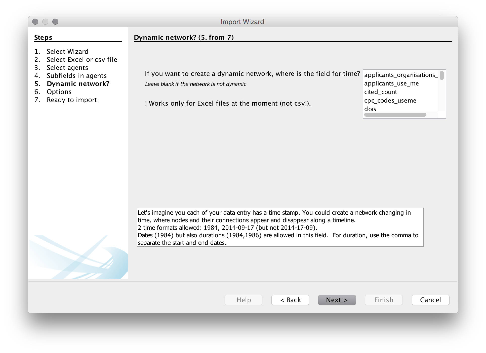
The next menu provides us with a list of options. Unfortunately, with one exception, it is not entirely clear what the consequences of these choices are so experimentation may be needed.

Choice1. Create links between applicants_use_me.
Choice 2. Remove duplicates. We don’t need that as we know that they are unique.
Choice 3. Remove self-loops. Generally we do want this (otherwise known as removing the diagonal to prevent actors counting onto themselves - this will produce a large black hoop or handle for a self-loop in Gephi).
We will choose to create the links and to remove the self loops.
Next we will see a create network screen setting out our choices.

Press Finish
Next we will see an import screen.

It is quite common to see warning messages on this screen.
In this case some of the applicants cells in the worksheet are blank because no data is available. When you see warning messages it is a good idea to check the underlying file to make sure that you understand the nature of the warning.
A second common warning with dynamic networks is that the year field is not correctly formatted. In that case, check that the format of the date/year field is what gephi is expecting in the underlying data. You can review the data in the data laboratory.
Note that the import screen also provides options on the type of graph. Normally for networks of authors, inventors and actors leave this as an undirected (unordered) network. Undirected is the basic default for patent data and scientific literature. We will also see the number of nodes (dots) and edges (connections). It is important to keep an eye on these values. If the nodes are much lower than you expect then it is useful to go back to your data and inspect for problems such as concatenation of cells and so on.
Click OK. You should now see a raw network that looks like this.

Note that we can see the number of Nodes and Edges in the top right. If we switch to the top left, we will see three tabs, for Overview, Data Laboratory and Preview. Choose Data Laboratory.
In the Data laboratory we can see the ID, Label, type of field and the frequency (the count of the number of times the name appears). Note that these fields are editable by clicking inside the entry and can also be grouped (for example where a variant of the same name has been missed during the name cleaning process in a tool such as Open Refine).
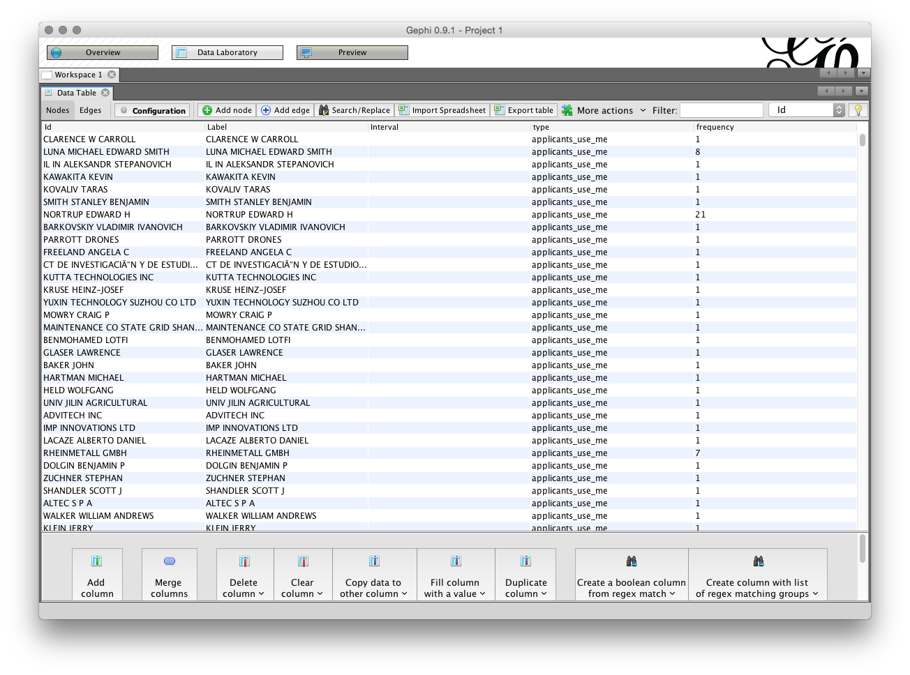
In some cases you may have filled any blank cells in the dataset with NA (for Not Available). If this is the case NA will show up as a node on the network. You can address this type of issue in the Data Laboratory by right clicking on the NA value and then Delete. Note also that you can always exclude or combine nodes after you have laid out the network by editing in the Data Laboratory.
The second part of the Data Laboratory is the Edges under Data Table in the Data Laboratory. The edges table involves a source and a target, where the source is the source node and the target is another node where there is a link between the nodes. We can see the edges table sorted alphabetically (click the source heading to sort) where the value in weight is the number of shared records.

Again, note that it is possible to export the edges set and import a set. Also note the menus at the bottom of the screen which allow column values to be copied over. This can be useful where the label value is not populated meaning that a name will not display on the node when the graph is laid out.
Most of the time we can simply proceed with laying out the network without paying much attention to the data laboratory. However, it is important to become familiar with the data laboratory to avoid unexpected problems or to spot corruption in the data.
##Sizing and Colouring Nodes
When we look at the Overview screen we have quite a wide range of options. We will start on the upper right with the Statistics panel.

The Run buttons will calculate a range of statistics on the network. Probably the two most useful are:
- Modularity Class. This algorithm iterates over the connections (edges) and allocates the nodes to communities or clusters based on the strength of the connections. This algorithm is explained in detail in this article Vincent D Blondel, Jean-Loup Guillaume, Renaud Lambiotte, Etienne Lefebvre, Fast unfolding of communities in large networks, in Journal of Statistical Mechanics: Theory and Experiment 2008 (10), P1000. The ability to detect communities in networks based on the strength of connections is a powerful tool in patent analytics.
- Network Diameter. This calculates two measures of
betweeness, that isbetweeness centrality(how often a node appears on the shortest path between nodes) and centrality(the average distance from a starting node to other nodes in the network). Network Diameter also calculates Eccentricity which is the distance between a given node and the farthest node from it in the network. For background on this see the Wikipedia entry and also Ulrik Brandes, A Faster Algorithm for Betweenness Centrality, in Journal of Mathematical Sociology 25(2):163-177, (2001)
Whereas Modularity Class identifies communities (particularly in large networks), centrality measures examine the position of a node in the graph relative to other nodes. This can be useful for identifying key actors in networks based on the nature of their connections with other actors (rather than simply the number of records).
If we run Modularity Class as in the figure a pop up message will inform us that there are 246 communities in the network. Given that there are only 362 nodes this suggests a weakly connected network made up of small individual clusters.
3.3.1 Filtering the data
We have a total of 5,265 nodes which is quite dense. After running the modularity class algorithm above, we will now move over to the Filters tab next to Statistics. Our aim here is to reduce the size of the network
Move over to the left where it says Ranking and then select the red inverted triangle. Set the largest value to 200 and the smallest to 20 (it is up to you what you choose). Then apply. The network will now change.
Open the Filters menu and choose Attributes. That will open a set of Folders and we would like to use Range. When the Range folder is open drag frequency into the Queries area below (marked with a red icon and Drag message when empty). Then either drag the range bar until you see a frequency of 5 as the minimum or change the number by clicking on it. Note that as we drag the results the number of Nodes and Edges in the Context above will change. We are looking for a manageable number. In the image below I have set the number to 5.

3.3.2 Setting Node Size
Next we want to size the nodes. On the left, look for the Appearance tab and then with Nodes in grey choose the Ranking button. Here the minimum size is set to 20 and the maximum to 150. Note that the default setting is 10 and this is generally too small for easy visibility. Press Apply and you will see the network changes to display the size of nodes based on the frequency. You can always adjust the size of nodes later if you are unhappy with them.

3.3.3 Colouring the Nodes
To colour the nodes choose the small palette icon next to the size icon. We now have choices on Unique (simply grey), Partition or Ranking. In this case we will choose Ranking and frequency. Note that a range of colour palettes can be accessed by clicking on the small icon to the right of the colour bar under ranking. When you have found a palette that you like then click Apply.
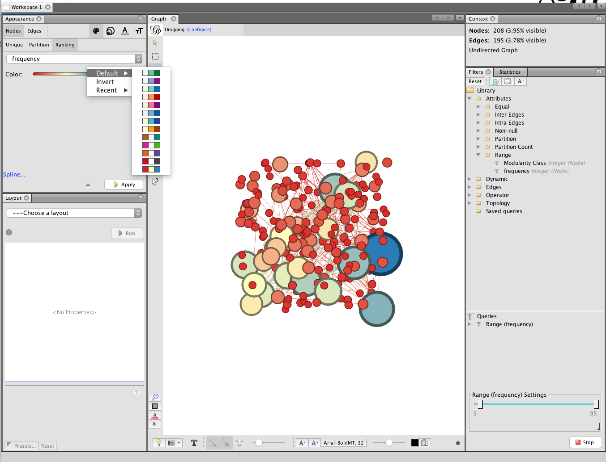
An alternative way of colouring the graph in earlier versions of gephi was to partition on Modularity class. This would colour the nodes as ‘communities’ of closely linked nodes. However, at present in Gephi 9 this option does not appear to be consistently available but may return in a future update.
There are a range of other options for colouring nodes including a colour plugin that will detect if a column with a colour value is present in the imported data. This can be very useful if you have colour coded categories of data prior to importing to gephi.
##Laying out the Graph
In the bottom left panel called Layout in the figure above there are a range of network visualisation options with more that can be imported from the plugin menus. Among the most useful are Fruchterman-Reingold, Force Atlas, OpenOrd and Circular with specialist plugins for georeferenced layouts that are well worth experimenting with.
We will illustrate network layout using Fruchterman-Reingold. The first setting is the area for the graph. The default is 10,000 but we will start with 20,000 because 10,000 tends to be too crunched. The default for the gravity setting is 10. This is intended to stop the nodes dispersing too far but is often too tight when labels are applied. Try changing the setting to 5 (which reduces the gravitational pull). The settings in the different layout options can take some getting used too and it is worthwhile creating a record of useful settings. Gephi does not save your settings so make sure you write down useful settings.

We are now good to go. But, before we start take note of two important options for later use.
The first is the NoOverlap plugin we installed above. This will help us to deal with overlapping nodes after layout. The second is Expansion which will help us to increase the size of a network are to make it easier to see the labels. Note also the Contraction option which will allow us to pull a network back in if it expands too far.
Now make sure that Fruchterman-Reingold is selected with the settings mentioned above and click Run.
You can leave the network to run and the nodes will start to settle. If the network disappears from view (depending on your mouse) try scrolling to zoom out. Our aim is to arrive at a situation where lines only cross through nodes where they are connected. As you become more experienced with layout you may want to assist the nodes with moving into a clear position for a tidier graph.
You will now have a network that looks something like this (note that 15,000 for the Area may have been enough).

We can see that some of the nodes are set very close together. That will affect the ability to label the nodes in a clear way. To address this we first use the NoOverlap function and later we may want to use the Expansion function in the Layout drop down menu items.
Choose nooverlap from the menu and Run.

While the difference is very minor in this case we have at least moved the nodes into separate positions. At a later stage you may want to use the Expansion function. This will increase the size of the network and is useful when working with labels.
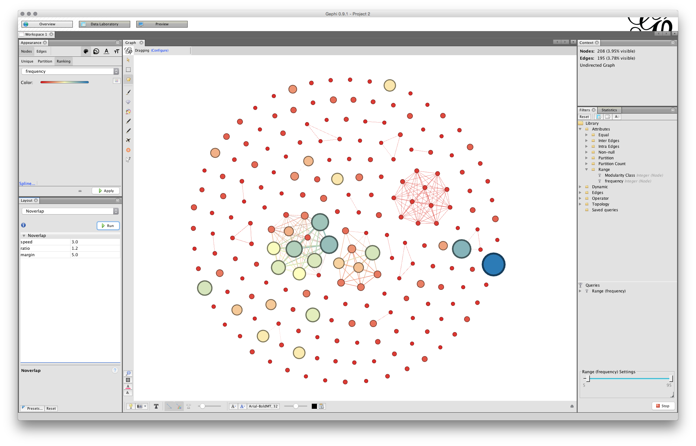
3.3.3.1 Save your work
At this stage we will save our work. One feature of Gephi as a Java programme is that there is no undo option. As a result it is a good idea to save work at a point where you are fairly happy with the layout as it stands.
Go to File and choose Save As and give the file name a .gephi extension. Do not forget to do this or gephi will not know how to read the file. If all goes well the file will save. On some occasions Java may throw an exception and you will basically have to start again. That is one reason to save work in Gephi regularly because it is a beta programme and subject to the predilections of Java on your computer.
##Adding Labels
The next step is to add some labels. In the bottom menu bar there are a range of options. What we want is the small grey triangle on the right of this menu bar that will open up a new bar. Click in the triangle and you will see a set of options. Choose labels and then at the far left check the Node box. We will not see any labels yet.
To the right is a menu with size. This is set to scaled. To see some labels move the scale slider as far as it will go. We will see labels come into view and a first hint that we will need to do some more work on laying out the graph to make it readable.

Next, change size to Node Size, the screen will now fill with text. Go to the scaler and pull it back until there is something more or less readable.
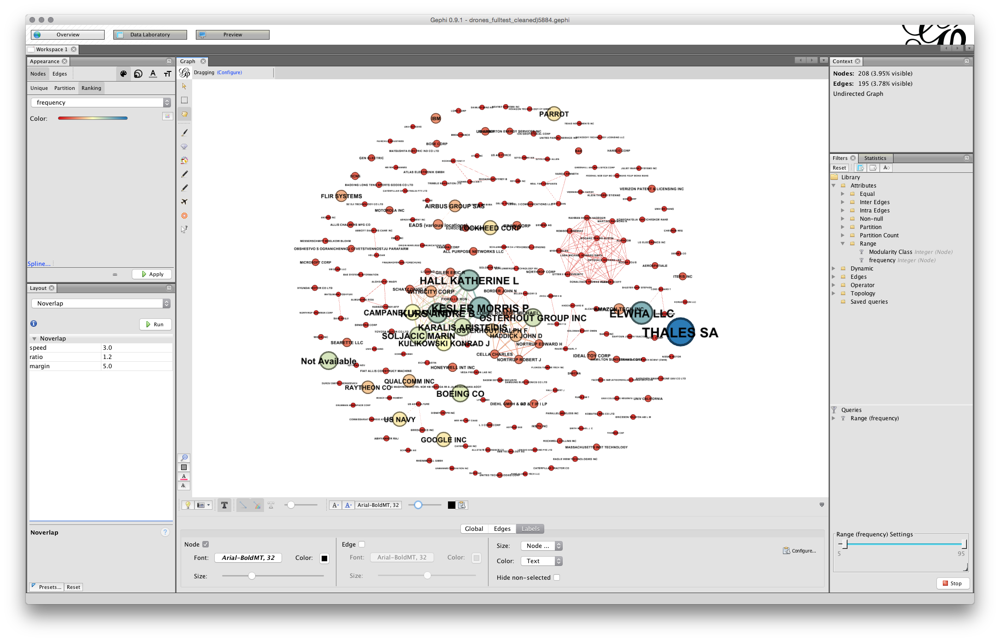
At this stage we may need to take a couple of actions.
- Where it is clear that our nodes are too close together we will need to run Expansion from the layout menu. As a general rule of thumb you should only need to do this twice at most… but it may depend on your graph.
- If you have very long labels such as Massachusetts Institute of Technology you will probably want to head over to the Observatory and edit the Node Label to something manageable such as MIT. This can make a big difference in cleaning up the labels.
In the image below we have used Expansion twice and then manually resize the labels using the slider.
You will now have something that looks more or less like this.

Note that you can use the slider to the right in the bottom menu to adjust the sizes and you could of course adjust the font. In some cases you may be happy with a rough and ready network rather than the detailed adjustments that are required for a final network graph.
Note the small camera icon on the left of the bottom menu. Either press that to take a screenshot or hold to bring up a configure menu that will allow you to choose a size.

If you pursuing this option you may also want to adjust the font or the colour and to use the bottom menu to arrive at a result you are happy with for display. In some cases (as we will deal with below) manually moving the nodes will allow you to arrive at a cleaner network for a screenshot.
Screenshots can be a very useful step in exploring data or sharing data internally. For publication quality graphics you will need to move over to using the Preview Options and engage in the gephi shuffle to progressively clean up the network for a publication quality graphic.
##Using the Preview Options
A more involved option for network visualisation is to move over to the Preview tab next to the Data Laboratory.
The default option uses curved edges. To use this press Refresh. This is fine but we can’t see any labels. In the presets now try default curved. You can play around with the different settings until you find a version that you like.
The main issue that we have here is that the labels are too large and the line weigths may also be very heavy.
To address the line weigth look for and check the rescale weight option under edges.

Note here the difference with the visualisation in the Overview. With Gephi what you see is not what you get.
To arrive at a more readable network the first option is to adjust the size of the font in the Node Labels panel of the preview settings. Note here that label size is set to be proportional to the font (uncheck that and experiment if you wish). If we stick with proportional font size then we will start smaller and move upwards. For example, if we adjust the font size to 3 then the proportional font size will be reduced. In deciding on the font size an important consideration will be how many nodes you want to be legible to the reader. In this case setting the font size to 3 and this produces a pretty legible network.

That is quite an acceptable graph for seeing the larger nodes. However, note that the labels of some of the nodes are overlapping some of the other nodes. This can produce a very cluttered look. The larger the base font size the more cluttered the graph will look and the more adjustment it is likely to need.
To make adjustments to this network we will use size 3. We will now need to move back and forwards between the Preview and the Overview adjusting the position of the nodes. For very complex graphs it can help to print out the preview to see what you need to adjust. Another sensible way to proceed is to mentally divide the graph into quarters and proceed clockwise quarter by quarter adjusting the nodes as you go. It is a very good idea to save your work at this point and as you go along.
In the first and second quarter moving clockwise things look good with no overlapping labels. However, some adjustments are needed in the third quarter in the middle of the network where Campanella and Kurs are overlapping. To make the adjustment move to the Overview tab, then select the small hand in the left vertical menu for grab. Locate Campanella and move it out of the way so it is not overlapping. Be gentle. Now go back to Preview and hit Refresh. When doing this quarter by quarter it can be helpful to zoom in in the Overview and in the Preview. For each of the overlapping nodes quarter by quarter make an adjustment periodically checking back by using Refresh in Preview and saving as you go along. Note that the aim is minor adjustments rather than major adjustments to node position (it is also possible to attempt to use Label Adjust in the Layout options but in practice this can distort the network). In the process it is also worth watching out for edges that intersect with nodes where there is no actual link. In those cases adjust the node position by trying to move it to the side of the unrelated edge. Note that this is often not possible with complex graphs and you will need to explain in the text that nodes may intersect with unrelated edges. Also check that any edits to labels do not contain mistakes (such as CATECH rather than CALTECH) and adjust accordingly. Typically long labels cause problems at this point and can be edited down in the Data Laboratory.
Through a series of minor adjustments in a clockwise direction you should arrive at a final network graph. Expect to spend about 20 minutes on clean up when you are familiar with Gephi depending on the number of nodes. It is worth noting that you will often need to go back to make final adjustments.
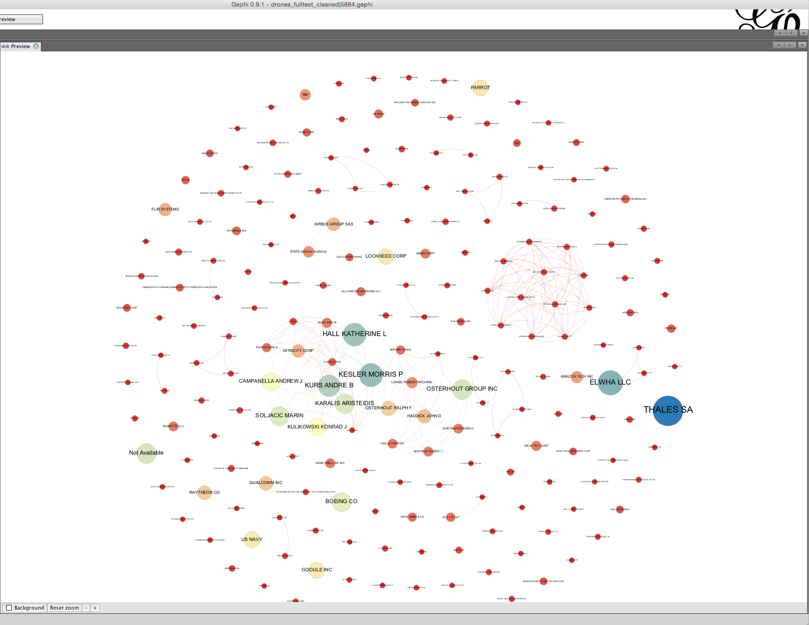
The basic principle here is that each node should have a readable label when you zoom in and that edges should not intersect with unrelated nodes (except if this is unavoidable). In this case we have taken a screen shot of the core of the network.

It is quite common when you arrive at a publication quality graphic to suddenly discover a mistake in the network. For example, at the data cleaning stage you may have decided not to group two companies with very similar names. However, at the network visualization stage the network suggests that in practice the two companies are one and the same. In this case check the data and head over to the Data Laboratory to group the nodes to a single node. As this suggests, time spent on data cleaning and data preparation will normally reap dividends in terms of time saved later in the analysis and visualization process.
##Exporting from Preview
At this stage we will want to do a final check and then export the data. Arriving at a publication quality export can in fact be the most time consuming and troublesome aspect of using Gephi. Before going any further save your work.
When exporting note that what you see on the screen and what you get are not exactly the same thing. The main issues are borders around nodes and the weight of lines in the edges. To adjust for this in the Nodes panel in Preview change the border width to a lower setting or 0 (the option we are choosing here). In the edges panel, if you do not want heavy lines then adjust the thickness or opacity (or both). In this case we have reduced the opacity of the edges to 50 and left the thickness as is. If you change something remember to hit Refresh.
Next select the export button in the bottom left. We will export to .pdf.
When you choose Export note that there is an Options menu for tighter control of the export.

The defaults are sensible and we will use those. If you are tempted to adjust them note that Gephi does not remember your settings, even when saved, so write them down. In reality the defaults work very well.
If all goes well you will end up with an image that looks like this.

Because the default size is portrait you will want to crop the image. For publication you will also want to outline the text (to fix the font across system). This can be done with the free GIMP software or paid software such as Adobe Illustrator.
Congratulations, you have now created your first Gephi network graph.
##Resources
- Gephi website
- Gephi github repository
- Quick start guide
- Installation instructions for All platforms. Gephi 8 suffers from a known issue for Mac users. That is, it uses Java 6 which is not installed by default on Macs. To resolve this you should follow the instructions posted here and works very well in most cases. It basically involves downloading a mac version of Java containing Java 6 and then running three or four commands in the Terminal on the mac to configure Gephi. If that doesn’t work try this more detailed account.
- Excel/csv converter to network plugin
- For ideas on patent network visualisation you might want to try this article on synthetic biology, this article on species names in patent data, and the use of exploratory network analysis using IPC/CPC co-occurrence analysis in the WIPO Patent Landscape for Animal Genetic Resources. For more try this Google Search.
#Patent Analytics with Plotly
##Introduction
In this chapter we provide an introduction to the online graphing service Plotly to create graphics for use in patent analysis.
Plotly is an online graphing service that allows you to import excel, text and other files for visualisation. It also has API services for R, Python, MATLAB and a Plotly Javascript Library. A recent update to the plotly package in R allows you to easily produce graphics directly in RStudio and to send the graphics to Plotly online for further editing and to share with others.
Plotly’s great strength is that it produces attractive interactive graphics that can easily be shared with colleagues or made public. It also has a wide variety of graph types including contour and heat maps and is built with the very popular D3.js Javascript library for interactive graphics. For examples of graphics created with Plotly see the public gallery. Plotly was founded in 2012 and is therefore quite new, however, Plotly is becoming a great tool for creating and sharing graphics. In this chapter our aim is to get you started with using Plotly online with .csv or Excel files. In the second part of the chapter we will focus on using the plotly package in RStudio to generate and export graphs.
##Getting Started with Plotly
We need to start out by creating an account using the Create Account Button.

Next we will see an invitation to take a tour (which is worth doing) and Plotly helpfully points out that we can load files from Google Drive or Dropbox. We then select the Workspace option to begin work.
##Importing Files
When you first arrive you will see a Workspace with a Grid (Plotly’s term for a table or worksheet).

In the workspace you will see an Import Icon that provides a range of options for importing data. Don’t import anything yet! You can also copy data from a file and paste it into the Grid.
At the time of writing, the reason not to use these options at the moment is that while the data may import fine first time, in other cases it will not. Using the options on this page you will receive no information if an import fails. We also encountered problems with saving data that had been pasted into the worksheet (even where it appeared to work). To avoid potential frustration head over to Organize.

From the Organize page select the New button and then Upload. Now select your local file. When you upload the file a status message will display and if all goes well then you will see a completed message. If not a red message will display informing you that there has been a problem (how you fix these problems is unclear).
For this experiment we used two datasets from the Open Source Patent Analytics Manual data repository. When using the Github repository click on the file of interest until you see a View Raw message. Then right click to download the data file from there. You can download them for your own use directly from the following links.
- WIPO trends application trends by year and with % change.
- Pizza patents by country and year. This is a simple dataset containing counts of patent documents containing the word pizza from WIPO Patentscope broken down by country and year.
One important point to note is that Plotly is not a data processing tool. While there are some data tools, your data will generally need to be in a form that is suitable for plotting at the time of input. In part this reflects the use of APIs which allow for users of Python, R and Matlab to send their data to Plotly directly for sharing with others. This is one of the great strengths of Plotly and we will cover this below. However, we also experienced problems in loading and graphing datasets that were easy to work with in Tableau (as a benchmark). This suggests a need to invest time in understanding the formats that Plotly understands.
We experienced a different type of problem with the simple WIPO trends data where Plotly concatenated the first row (containing labels) and the first data row into one heading row. However, in most cases import seemed to be fine. To turn a row into a heading row try right clicking the row with the headings and right clicking on use row as col headers. Then right click again to remove the original row.
##Creating a graphic
We will start with the simple WIPO trends data by opening up that Grid.

Note here that in the Grid we have options to select the x or y axis for plotting. There is also an Options menu that we will come back to.
The Type of plot can be changed by selecting the drop down menu as we can see below.

Sticking with a line graph, when we create the plot we can add a title and then change the theme (in this case to Catherine).

We could also add a fit line by selecting the FIT DATA menu icon. This will ask you to create a fit and then you have a range of preset functions or you can add your own. Here we have simply chosen the default Linear fit.

We can then save the plot and use the export button to save the plot in a variety of formats and sizes. It is also very easy to add annotations using the Notes icon. Confusingly, the large blue Share button only seems to save the file and despite saving the plot we were not able to locate it again. While Plotly certainly looks nice, and appears to have attractive functions it is not intuitive and the difficulties involved in importing and sharing can be frustrating and time consuming. In short, time is needed to invest in and explore the potential of this tool.
###Adding a Second Axis
If we go back to our original WIPO trends data we have a percentage score for the year on year change in patent applications. We might want to show this on a plot with a second axis for the percentage.
To do that in the Grid view select the button “choose as y” in the Growth-rate column to add a second item for the y axis.

When we choose Line plot we will now see the two sets of data with the percentage trailing on the bottom. We now need to create a second y axis on the right and assign the percentage data to that.
To do this select the Traces icon and a menu will pop up showing the data traces. The drop down menu under Traces will show Applications, so, select Growth Rate % from the drop down menu. Then where you see Lines/Markers select the dot. This will prevent the percentage scores displaying as a line.

Next, in the same panel under Axes select New Axis/Subplot and a new screen will pop up. We have some choices here but will simply choose to create a new axis on the right.

The result will look something like this.

Our issue now is equalising the axes and changing the size of the points for the percentage scores. Finally we can add a title.
Before we go any further let’s note that we have a significant minus axis value of -3.6% in 2009 when patent applications declined. There is also a minus value in 2002.

If we wanted to retain these values we would probably want to turn off the second set of grid lines. We would also want to resize the points.
To turn off the grid lines on the second y axis Click on the Axes icon in the main menu on the left. Then from the All Axes drop down under Axes select Y Axis 2. Then click the Lines submenu icon and turn Lines and Grid lines to OFF. Also turn the Zero line to OFF unless you want to retain it.

To resize the points we need to go back to the Traces main menu on the left and select Growth Rate from the list of Traces. Then choose the Style tab and change the marker size to something larger such as 8.

To finish off the graphic we will want to add some labels. We can simply type in the Axis labels and a title into the text boxes provided. By choosing the Legend icon we could turn the legend on or off. Note that while this graph could be seen as self explanatory it may not be for the reader. We can also simply drag the axes labels to a different position.
It is possible that we would want to remove the negative values from the plot (in that case the values would need to be explained in the accompanying text). To do that select Axes, then Y Axis2 then in Autorange choose Non-negative to show only values greater than zero on the plot.
If we wished we could also apply a fit line by choosing the Fit Data icon. We will choose Linear.

Finally, to finish off the plot we might want to add annotations using the NOTES icon. Simply click on the plus sign in the pop up menu for a new annotation and then select the arrow and text and move it into the position you want.

In this case we have added a couple of markers that may help to understand trends in activity. First, we have a dip in patent applications between 2001 and 2002. One possible explanation here is that this is a knock on effect of the collapse of the dot.com bubble where share prices reached a peak in 2000, declined rapidly and recovered before declining again into 2001. Patent data typically displays lag effects and it is reasonable to think that the decline in application activity from 2001 reflects these wider economic adjustments. Similarly, there is a significant dip in applications between 2008 and 2009 that it appears reasonable to assume reflects the knock on effects of the global economic crisis of 2007-2008. Note here that these are crude way markers to assist with interpreting the graphics. We could choose to add other timeline style events or layer graphics to help understand the potential or actual relationships between wider economic activity and trends in patent applications worldwide.
##Saving and Sharing
To save the plot we simply click Save. However, it is here that one of Plotly’s major strengths becomes apparent. As soon as we save the plot we can also invite others by email, we can create a public or private shareable link. For the collaborators, they must have a Plotly account already for this to work.

The next option is to share a link. Note here that the default is to share a private link. To change that select the lock icon. The private link is particularly well suited for patent professionals.

You could also grab an embed code to embed the plot in a web page

Alternatively, surprise your friends and relatives by posting the plot on facebook or share with a wider audience on Twitter.
In this example we have focused on developing a very simple plot using plotly. In practice there are a wide range of possible plotting options with a growing number of tutorials provided here.
##Working with Plotly in R
We are following the instructions for setting up Plotly in R. We will be using RStudio for this experiment. Download RStudio for your operating system here and make sure that you also install R at the same time from the link on the RStudio page here. For Python try these installation instructions to get started.
In RStudio first we need to install the plotly package. We will also install some other helpful packages for working with data in R. Either select the Packages tab in RStudio and type plotly and install, or type the following in the console and press Enter.
install.packages("plotly") # the main event
install.packages("readr") # import csv files
install.packages("dplyr") # wrangle data
install.packages("tidyr") # tidy dataThen load the libraries.
We now need to set our credentials for the API. When logged in to plotly follow this link to obtain your API key. Note also that you can obtain a streaming API token on the same page. Streaming will update a graphic from inside RStudio.
When you have obtained your token use the following command to store your username and the API key in your environment.
Sys.setenv("plotly_username" = "your_plotly_username")
Sys.setenv("plotly_api_key" = "your_api_key")Next we will load a dataset of WIPO Patentscope data containing sample data on patent documents containing the word pizza organised by country and year (pcy = pizza, country, year).
library(readr)
pcy <- read_csv("https://github.com/wipo-analytics/opensource-patent-analytics/raw/master/2_datasets/pizza_medium_clean/pcy.csv")Because patent data generally contains a data cliff for more recent years we will filter out recent years using filter() from the dplyr package by specifying a year that is less than or equal to 2012. To take out the long tail of limited historic data we will specify greater than or equal to 1990.
## # A tibble: 223 x 4
## pubcountry pubcode pubyear n
## <chr> <chr> <int> <int>
## 1 Canada CA 1990 19
## 2 Canada CA 1991 49
## 3 Canada CA 1992 66
## 4 Canada CA 1993 59
## 5 Canada CA 1994 50
## 6 Canada CA 1995 39
## 7 Canada CA 1996 36
## 8 Canada CA 1997 45
## 9 Canada CA 1998 46
## 10 Canada CA 1999 47
## # ... with 213 more rowsTo create the plot in plotly we use the plot_ly() function. We will specify the dataset, the x and y axis and then the colour for the country data (known as a trace in plotly language). We will then add a title using the %>% pipe operator for “this” then “that”. To specify the visual we want we specify the mode as “lines”" (try “markers” for a scatter plot).
library(plotly)
s <- plot_ly(pcy, x = pubyear, y = n, color = pubcountry, mode = "lines") %>%
layout(title = "Patenscope Pizza Patent Trends")
s
Our data has more entries than there are colours in the default color palette. Plotly will record a warning on the number of colours but we can now clearly see a plot. If we have entered our credentials for the API (above) we can also push the graph online along with the data for further editing or to share with others.
This will open a browser window and ask you to sign up or login before being taken to the graph.

As this makes clear, it is easy to generate a plotly graph in R but we will want to dig into the plotly package in a little more detail.
To change colours it is helpful to note that plotly installs and then calls the RColorBrewer package (it will display in the Packages list). To see the colour palettes we first tick RColorBrewer in Packages (or library(RColorBrewer)) to load it.
To view the available palettes you could simply use View(brewer.pal.info) or the following chunk which arranges the data by the number of colours.
library(RColorBrewer)
library(dplyr)
brewer.pal.info$names <- row.names(brewer.pal.info)
select(brewer.pal.info, 4:1) %>%
arrange(desc(maxcolors))## names colorblind category maxcolors
## 1 Paired TRUE qual 12
## 2 Set3 FALSE qual 12
## 3 BrBG TRUE div 11
## 4 PiYG TRUE div 11
## 5 PRGn TRUE div 11
## 6 PuOr TRUE div 11
## 7 RdBu TRUE div 11
## 8 RdGy FALSE div 11
## 9 RdYlBu TRUE div 11
## 10 RdYlGn FALSE div 11
## 11 Spectral FALSE div 11
## 12 Pastel1 FALSE qual 9
## 13 Set1 FALSE qual 9
## 14 Blues TRUE seq 9
## 15 BuGn TRUE seq 9
## 16 BuPu TRUE seq 9
## 17 GnBu TRUE seq 9
## 18 Greens TRUE seq 9
## 19 Greys TRUE seq 9
## 20 Oranges TRUE seq 9
## 21 OrRd TRUE seq 9
## 22 PuBu TRUE seq 9
## 23 PuBuGn TRUE seq 9
## 24 PuRd TRUE seq 9
## 25 Purples TRUE seq 9
## 26 RdPu TRUE seq 9
## 27 Reds TRUE seq 9
## 28 YlGn TRUE seq 9
## 29 YlGnBu TRUE seq 9
## 30 YlOrBr TRUE seq 9
## 31 YlOrRd TRUE seq 9
## 32 Accent FALSE qual 8
## 33 Dark2 TRUE qual 8
## 34 Pastel2 FALSE qual 8
## 35 Set2 TRUE qual 8This indicates that the maximum number of colours in a palette is 12. Let’s try Paired for illustration. This has the advantage of being colour blind friendly.
library(plotly)
library(dplyr)
s1 <- plot_ly(pcy, x = pubyear, y = n, color = pubcountry, colors = "Paired", mode = "lines") %>%
layout(title = "Pizza Patent trends")
s1
As we can see this will then produce a plot with the color palette, plotly will show a warning that the base palette (“Set2”) has 8 colours but will then specify that it is displaying the palette that we requested.
In practice we would want to break this plot into subplots for two reasons. First, the data and value ranges vary widely between countries and second, it is better to ensure that colours are distinct.
To do this we need to run some calculations on the data. We will use functions from dplyr and tidyr to quickly tally the data grouping by the publication code. Then we will add the data to discreet groups based on the scores using mutate() (to add a variable) and ntile() to divide the countries into groups based on the number of records (n) and add this to the new variable called group. Finally, we arrange the data in descending order based on the number of records.
library(dplyr)
library(tidyr)
total <- tally(group_by(pcy, pubcode)) %>%
mutate(group = ntile(nn, 3)) %>%
rename(records = nn) %>%
arrange(desc(records))
total## # A tibble: 16 x 3
## pubcode records group
## <chr> <int> <int>
## 1 US 3835 3
## 2 WO 1366 3
## 3 CA 1186 3
## 4 EP 1074 3
## 5 KR 307 3
## 6 JP 205 2
## 7 DE 83 2
## 8 ZA 66 2
## 9 CN 60 2
## 10 IL 29 2
## 11 MX 23 1
## 12 RU 10 1
## 13 PT 9 1
## 14 EA 4 1
## 15 ES 3 1
## 16 SG 2 1When we view total we now see that countries have been divided into 3 groups based on their number of records. Groups 1 and 2 are unlikely to provide a meaningful graph and group 1 in particular could be dropped. However, we could usefully display this information as a bar chart using plot_ly and selecting type = "bar".
library(plotly)
library(dplyr)
total_bar <- plot_ly(total, x = pubcode , y = records, type = "bar")
total_bar
Having divided our data into three groups it would now be useful to plot them separately. Here we face the problem that our original data in pcy displays values by year while total displays the total number of records and group. We need first to add the group identifiers to the pcy table. To do that we will modify total to drop the count of records in records using the dplyr select() function. Then we will use left_join() to join the total and total_group tables together. Note that the function will use the shared field “pubcode” for joining.
## # A tibble: 16 x 2
## pubcode group
## <chr> <int>
## 1 US 3
## 2 WO 3
## 3 CA 3
## 4 EP 3
## 5 KR 3
## 6 JP 2
## 7 DE 2
## 8 ZA 2
## 9 CN 2
## 10 IL 2
## 11 MX 1
## 12 RU 1
## 13 PT 1
## 14 EA 1
## 15 ES 1
## 16 SG 1Then we join the two tables and rename n to records for graphing.
## Joining, by = "pubcode"## # A tibble: 223 x 5
## pubcountry pubcode pubyear records group
## <chr> <chr> <int> <int> <int>
## 1 Canada CA 1990 19 3
## 2 Canada CA 1991 49 3
## 3 Canada CA 1992 66 3
## 4 Canada CA 1993 59 3
## 5 Canada CA 1994 50 3
## 6 Canada CA 1995 39 3
## 7 Canada CA 1996 36 3
## 8 Canada CA 1997 45 3
## 9 Canada CA 1998 46 3
## 10 Canada CA 1999 47 3
## # ... with 213 more rowsThe next step is to generate a set of three plots corresponding with our three groups. We will call them pizza3, pizza2 and pizza1 and use the full publication country name in pubcountry as the colour for the lines.
library(plotly)
library(dplyr)
pizza3 <- filter(total_grouped, group == 3) %>%
plot_ly(x = pubyear, y = records, color = pubcountry, type = "lines", mode = "lines")
pizza2 <- filter(total_grouped, group == 2) %>%
plot_ly(x = pubyear, y = records, color = pubcountry, type = "lines", mode = "lines")
pizza1 <- filter(total_grouped, group == 1) %>%
plot_ly(x = pubyear, y = records, color = pubcountry, type = "lines", markers = "lines")We now have a total of four draft plots, total_bar and pizza 3 to 1 for our groups. Plotly will allow us to display plots side by side. Note that this can create quite a crunched display in RStudio and is best viewed by selecting the small show in new window button in the RStudio Viewer.
You will now see an image that looks a lot like this.

The figure reveals no coherent trend for the countries in Group 1 on the right and it makes sense to drop this data. Group 2 is potentially more interesting but the low overall numbers and the spikes for data for Japan suggests very low activity and a lack of complete data. Furthermore, ideally we would want to allocate different colours to the different names in our trends panels (probably by allocating different palettes) which could take considerable time relative to the gains in terms of displaying low frequency data. We will let the bar chart do that work and finish with a simple two plot graphic to send to plotly online.

It is then easy to edit the labels and make final adjustments online.
We can also share the graph via social media, download the data, or edit the graph. Note that the default setting for a graph sent via the API appears to be public (with no obvious way to change that).
It is here that Plotly’s potential importance as a tool for sharing data and graphics becomes apparent. It is a powerful tool. Recent updates to the R package and the introduction of dashboards demonstrates ongoing improvements to this new service.
##Round Up
In this chapter we have provided a brief introduction to Plotly to help you get started with using this tool for patent analytics. Plotly provides visually appealing and interactive graphics that can readily be shared with colleagues, pasted into websites and shared publicly. The availability of APIs is also a key feature of Plotly for those working in Python, R or other programmatic environments.
However, Plotly can also be confusing. For example, we found it hard to understand why particular datasets would not upload correctly (when they can easily be read in Tableau). We also found it hard to understand the format that the data needed to be in to plot correctly. So, Plotly can be somewhat frustrating although it has very considerable potential for sharing appealing graphics. The recent addition of dashboards is also a promising development. Finally, for R users, the plotly package now closely integrates with the very popular ggplot2 package through the ggplotly() function which allows for the creation of interactive ggplot2 graphics.
In this chapter we have only touched on the potential of Plotly as a powerful free tool for creating interactive graphics. Other kinds of plots that are well worth exploring include Bubble maps, contour maps and heat maps. To experiment for yourself try the Plotly tutorials.
#Patent Infographics with R
In this chapter we will use RStudio to prepare patent data for visualisation in an infographic using online software tools.
Infographics are a popular way of presenting data in a way that is easy for a reader to understand without reading a long report. Infographics are well suited to presenting summaries of data with simple messages about key findings. A good infographic can encourage the audience to read a detailed report and is a tool for engagement with audiences during presentations of the findings of patent research.
Some patent offices have already been creating infographics as part of their reports to policy makers and other clients. The Instituto Nacional de Propiedade Industrial (INPI) in Brazil produces regular two page Technology Radar (Radar Tecnologico) consisting of charts and maps that briefly summarise more detailed research on subjects such as Nanotechnology in Waste Management. WIPO Patent Landscape Reports, which go into depth on patent activity for a particular area, are accompanied by one page infographics that have proved very popular such as the infographic accompanying a recent report on assistive devices.
A growing number of companies are offering online infographic software services such as infogr.am,easel.ly piktochart.com, canva.com or venngage.com to mention only a selection of the offerings out there. The Cool Infographics website provides a useful overview of available tools.
One feature of many of these services is that they are based on a freemium model. Creating graphics is free but the ability to export files and the available formats for export of your masterpiece (e.g. high resolution or .pdf) often depend on upgrading to a monthly account at varying prices. In this chapter we test drive infogr.am as a chart friendly service, albeit with export options that depend on a paid account.
This chapter is divided into two sections.
- In part 1 we focus on using RStudio to prepare patent data for visualisation in infographics software using the
dplyr,tidyrandstringrpackages. This involves dealing with common problems with patent data such as concatenated fields, white space and creating counts of data fields. - In part 2 we produce an infographic from the data using infogr.am.
##Getting Started
To start with we need to ensure that RStudio and R for your operating system are installed by following the instructions on the RStudio website here. Do not forget to follow the link to also install R for your operating system.
When working in RStudio it is good practice to work with projects. This will keep all of the files for a project in the same folder. To create a project go to File, New Project and create a project. Call the project something like infographic. Any file you create and save for the project will now be listed under the Files tab in RStudio.
R works using packages (libraries) and there are around 7,490 of them for a whole range of purposes. We will use just a few of them. To install a package we use the following. Copy and paste the code into the Console and press enter.
Packages can also be installed by selecting the Packages tab and typing the name of the package.
To load the packages (libraries) use the following or check the tick box in the Packages pane.
We are now ready to go.
##Load a .csv file using readr
We will work with the pizza_medium_clean dataset in the online Github Manual repository. If manually downloading a file remember to click on the file name and select Raw to download the actual file.
We can use the easy to use read_csv() function from the readr package to quickly read in our pizza data directly from the Github repository. Note the raw at the beginning of the filename.
library(readr)
pizza <- read_csv("https://github.com/wipo-analytics/opensource-patent-analytics/blob/master/2_datasets/pizza_medium_clean/pizza.csv?raw=true")readr will display a warning for the file arising from its efforts to parse publication dates on import. We will ignore this as we will not be using this field.
As an alternative to importing directly from Github download the file and in RStudio use File > Import Dataset > From .csv. If you experience problems with direct import of a file the File > Import Dataset approach will give you a range of easy to use controls for figuring this out (e.g. where .csv is actually a tab separated file).
##Viewing Data
We can view data in a variety of ways.
- In the console:
## # A tibble: 9,996 × 31
## applicants_cleaned
## <chr>
## 1 <NA>
## 2 Ventimeglia Jamie Joseph; Ventimeglia Joel Michael; Ventimeglia Thomas Jose
## 3 Cordova Robert; Martinez Eduardo
## 4 Lazarillo De Tormes S L
## 5 <NA>
## 6 Depoortere, Thomas
## 7 Frisco Findus Ag
## 8 Bicycle Tools Incorporated
## 9 Castiglioni, Carlo
## 10 <NA>
## # ... with 9,986 more rows, and 30 more variables:
## # applicants_cleaned_type <chr>, applicants_organisations <chr>,
## # applicants_original <chr>, inventors_cleaned <chr>,
## # inventors_original <chr>, ipc_class <chr>, ipc_codes <chr>,
## # ipc_names <chr>, ipc_original <chr>, ipc_subclass_codes <chr>,
## # ipc_subclass_detail <chr>, ipc_subclass_names <chr>,
## # priority_country_code <chr>, priority_country_code_names <chr>,
## # priority_data_original <chr>, priority_date <chr>,
## # publication_country_code <chr>, publication_country_name <chr>,
## # publication_date <chr>, publication_date_original <chr>,
## # publication_day <int>, publication_month <int>,
## # publication_number <chr>, publication_number_espacenet_links <chr>,
## # publication_year <int>, title_cleaned <chr>, title_nlp_cleaned <chr>,
## # title_nlp_multiword_phrases <chr>, title_nlp_raw <chr>,
## # title_original <chr>In Environment click on the blue arrow to see in the environment. Keep clicking to open a new window with the data.
Use the
View()command (for data.frames and tables)
If possible use the View() command or environment. The difficulty with the console is that large amounts of data will simply stream past.
##Identifying Types of Object
We often want to know what type of object we are working with and more details about the object so we know what to do later. Here are some of the most common commands for obtaining information about objects.
class(pizza) ## type of object
names(pizza) ## names of variables
str(pizza) ## structure of object
dim(pizza) ## dimensions of the objectThe most useful command in this list is str() because this allows us to access the structure of the object and see its type.
str() is particularly useful because we can see the names of the fields (vectors) and their type. Most patent data is a character vector with dates forming integers.
##Working with Data
We will often want to select aspects of our data to focus on a specific set of columns or to create a graph. We might also want to add information, notably numeric counts.
The dplyr package provides a set of very handy functions for selecting, adding and counting data. The tidyr and stringr packages are sister packages that contain a range of other useful functions for working with our data. We have covered some of these in other chapters on graphing using R but will go through them quickly and then pull them together into a function that we can use across our dataset.
###Select
In this case we will start by using the select() function to limit the data to specific columns. We can do this using their names or their numeric position (best for large number of columns e.g. 1:31). In dplyr, unlike most R packages, existing character columns do not require "".
We now have a new data.frame that contains two columns. One with the year and one with the publication number. Note that we have created a new object called pizza_number using <- and that after select() we have named our original data and the columns we want. A fundamental feature of select is that it will drop columns that we do not name. So it is best to create a new object using <- if you want to keep your original data for later work.
###Adding data with mutate()
mutate() is a dplyr function that allows us to add data based on existing data in our data frame, for example to perform a calculation. In the case of patent data we normally lack a numeric field to use for counts. We can however assign a value to our publication field by using sum() and the number 1 as follows.
When we view pizza_number we now have a value of 1 in the column n for each publication number. Note that in patent data a priority, application, publication or family number may occur multiple times and we would want to reduce the dataset to distinct records. For that we would use n_distinct(pizza_number$publication_number) from dplyr or unique(pizza_number$publication_number) from base R. Because the publication numbers are unique we can proceed.
###Counting data using count()
At the moment, we have multiple instances of the same year (where a patent publication occurs in that year). We now want to calculate how many of our documents were published in each year. To do that we will use the dplyr function count(). We will use the publication_year and add wt = (for weight) with n as the value to count.
## # A tibble: 58 × 2
## publication_year nn
## <int> <dbl>
## 1 1940 1
## 2 1954 1
## 3 1956 1
## 4 1957 1
## 5 1959 1
## 6 1962 1
## 7 1964 2
## 8 1966 1
## 9 1967 1
## 10 1968 8
## # ... with 48 more rowsWhen we now examine pizza_total, we will see the publication year and a summed value for the records in that year.
This raises the question of how we know that R has calculated the count correctly. We already know that there are 9996 records in the pizza dataset. To check our count is correct we can simply use sum and select the column we want to sum using $.
## [1] 9996So, all is good and we can move on. The $ sign is one of the main ways of subsetting to tell R that we want to work with a specific column (the others are “[” and “[[”).
###Rename a field with rename()
Next we will use rename() from dplyr to rename the fields. Note that understanding which field require quote marks can take some effort. In this case renaming the character vector publication_year as “pubyear” requires quotes while renaming the numeric vector “n” does not.
library(dplyr)
pizza_total <- rename(pizza_total, pubyear = publication_year, publications = nn) %>%
print()## # A tibble: 58 × 2
## pubyear publications
## <int> <dbl>
## 1 1940 1
## 2 1954 1
## 3 1956 1
## 4 1957 1
## 5 1959 1
## 6 1962 1
## 7 1964 2
## 8 1966 1
## 9 1967 1
## 10 1968 8
## # ... with 48 more rows###Make a quickplot with qplot()
Using the qplot() function in ggplot2 we can now draw a quick line graph. Note that qplot() is unusual in R because the data (pizza_total) appears after the coordinates. We will specify that we want a line using geom = (if geom is left out it will be a scatter plot). This will give us an idea of what our plot might look like in our infographic and actions we might want to take on the data.

The plot reveals a data cliff in recent years. This normally reflects a lack of data for the last 2-3 years as recent documents feed through the system en route to publication.
It is a good idea to remove the data cliff by cutting the data 2-3 years prior to the present. In some cases two years is sufficient, but 3 years is a good rule of thumb.
We also have long tail of data with limited data from 1940 until the late 1970s. Depending on our purposes with the analysis we might want to keep this data (for historical analysis) or to focus in on a more recent period.
We will limit our data to specific values using the dplyr function filter().
###Filter data using filter()
In contrast with select() which works with columns, filter() in dplyr works with rows. In this case we need to filter on the values in the pubyear column. To remove the data prior to 1990 we will use the greater than or equal to operator >= on the pubyear column and we will use the less than or equal to <= operator on the values after 2012.
One strength of filter() in dplyr is that it is easy to filter on multiple values in the same expression (unlike the very similar filter function in base R). The use of filter() will also remove the 30 records where the year is recorded as NA (Not Available). We will write this file to disk using the simple write_csv() from readr. To use write_csv() we first name our data (pizza_total) and then provide a file name with a .csv extension. In this case and other examples below we have used a descriptive file name bearing in mind that Windows systems have limitations on the length and type of characters that can be used in file names.
library(dplyr)
library(readr)
pizza_total <- filter(pizza_total, pubyear >= 1990, pubyear <= 2012)
write_csv(pizza_total, "pizza_total_1990_2012.csv")
pizza_total## # A tibble: 23 × 2
## pubyear publications
## <int> <dbl>
## 1 1990 139
## 2 1991 154
## 3 1992 212
## 4 1993 201
## 5 1994 162
## 6 1995 173
## 7 1996 180
## 8 1997 186
## 9 1998 212
## 10 1999 290
## # ... with 13 more rowsWhen we print pizza_total to the console we will see that the data now covers the period 1990-2012. When using filter() on values in this way it is important to remember to apply this filter to any subsequent operations on the data (such as applicants) so that it matches the same data period.
To see our .csv file we can head over to the Files tab and, assuming that we have created a project, the file will now appear in the list of project files. Clicking on the file name will display the raw unformatted data in RStudio.
##Simplify code with pipes %>%
So far we have handled the code one line at a time. But, one of the great strengths of using a programming language is that we can run multiple lines of code together. There are two basic ways that we can do this.
We will create a new temporary object df to demonstrate this.
- The standard way
library(dplyr)
library(ggplot2)
df <- select(pizza, publication_number, publication_year)
df <- mutate(df, n = sum(publication_number = 1))
df <- count(df, publication_year, wt = n)
df <- rename(df, pubyear = publication_year, publications = nn)
df <- filter(df, pubyear >= 1990, pubyear <= 2012)
qplot(x = pubyear, y = publications, data = df, geom = "line")The code we have just created is six lines long. If we select all of this code and run it in one go it will produce our graph.
One feature of this code is that each time we run a function on the object total we name it at the start of each function (e.g. mutate(df…)) and then we overwrite the object.
We can save quite a lot of typing and reduce the complexity of the code using the pipe operator introduced by the the magrittr package and then adopted in Hadley Wickham’s data wrangling and tidying packages.
- Using pipes
%>%
Pipes are now a very popular way of writing R code because they simplify writing R code and speed it up. The most popular pipe is %>% which means “this” then “that”. In this case we are going to create a new temporary object df1 by first applying select to pizza, then mutate, count, rename and filter. Note that we only name our dataset once (in select()) and we do not need to keep overwriting the object.
library(dplyr)
library(ggplot2)
df1 <- select(pizza, publication_number, publication_year) %>% mutate(n = sum(publication_number = 1)) %>%
count(publication_year, wt = n) %>% rename(pubyear = publication_year, publications = nn) %>%
filter(pubyear >= 1990, pubyear <= 2012) %>% qplot(x = pubyear, y = publications,
data = ., geom = "line") %>% print()
In the standard code we typed df nine times to arrive at the same result. Using pipes we typed df1 once. Of greater importance is that the use of pipes simplifies the structure of R code by introducing a basic “this” then “that” logic which makes it easier to understand.
One point to note about this code is that qplot() requires us to name our data (in this case df1). However, df1 is actually the final output of the code and does not exist as an input object before the final line is run. So, if we attempt to use data = df1 in qplot() we will receive an error message. The way around this is to use . in place of our data object. That way qplot() will know we want to graph the outputs of the earlier code. Finally, we need to add an explicit call to print() to display the graph (without this the code will work but we will not see the graph).
If we now inspect the structure of the df1 object (using str(df1)) in the console, it will be a list. The reason for this is that it is an object with mixed components, including a data.frame with our data plus additional data setting out the contents of the plot. As there is no direct link between R and our infographics software this will create problems for us later because the infographics software won’t know how to interpret the list object. So, it is generally a good idea to use a straight data.frame by excluding the call to qplot and adding it later when needed as follows.
library(dplyr)
library(ggplot2)
df2 <- select(pizza, publication_number, publication_year) %>% mutate(n = sum(publication_number = 1)) %>%
count(publication_year, wt = n) %>% rename(pubyear = publication_year, publications = nn) %>%
filter(pubyear >= 1990, pubyear <= 2012) %>% print()## # A tibble: 23 × 2
## pubyear publications
## <int> <dbl>
## 1 1990 139
## 2 1991 154
## 3 1992 212
## 4 1993 201
## 5 1994 162
## 6 1995 173
## 7 1996 180
## 8 1997 186
## 9 1998 212
## 10 1999 290
## # ... with 13 more rowsNote that in this case the only change is that we need to explicitly include the reference to the df2 data frame as the data argument in the call to qplot().

##Harmonising data
One challenge with creating multiple tables from a baseline dataset is keeping track of subdatasets. At the moment we have two basic objects we will be working with:
pizza- our raw datasetpizza_total- created viapizza_numberlimited to 1990_2012.
In the remainder of the chapter we will want to create some additional datasets from our pizza dataset. These are:
- Country trends
- Applicants
- International Patent Classification (IPC) Class
- Phrases
- Google IPC
- Google phrases
We need to make sure that any data that we generate from our raw dataset matches the period for the pizza_total dataset. If we do not do this there is a risk that we will generate subdatasets with counts for the raw pizza dataset.
To handle this we will use filter() to create a new baseline dataset with an unambiguous name.
library(dplyr)
pizza_1990_2012 <- rename(pizza, pubyear = publication_year) %>% filter(pubyear >=
1990, pubyear <= 2012)
pizza_1990_2012## # A tibble: 8,262 × 31
## applicants_cleaned applicants_cleaned_type
## <chr> <chr>
## 1 <NA> People
## 2 Lazarillo De Tormes S L Corporate
## 3 <NA> People
## 4 Depoortere, Thomas People
## 5 Frisco Findus Ag Corporate
## 6 Bicycle Tools Incorporated Corporate
## 7 Castiglioni, Carlo People
## 8 <NA> People
## 9 Bujalski, Wlodzimierz People
## 10 Ehrno Flexible A/S; Stergaard, Ole Corporate; People
## # ... with 8,252 more rows, and 29 more variables:
## # applicants_organisations <chr>, applicants_original <chr>,
## # inventors_cleaned <chr>, inventors_original <chr>, ipc_class <chr>,
## # ipc_codes <chr>, ipc_names <chr>, ipc_original <chr>,
## # ipc_subclass_codes <chr>, ipc_subclass_detail <chr>,
## # ipc_subclass_names <chr>, priority_country_code <chr>,
## # priority_country_code_names <chr>, priority_data_original <chr>,
## # priority_date <chr>, publication_country_code <chr>,
## # publication_country_name <chr>, publication_date <chr>,
## # publication_date_original <chr>, publication_day <int>,
## # publication_month <int>, publication_number <chr>,
## # publication_number_espacenet_links <chr>, pubyear <int>,
## # title_cleaned <chr>, title_nlp_cleaned <chr>,
## # title_nlp_multiword_phrases <chr>, title_nlp_raw <chr>,
## # title_original <chr>In this case we start with a call to rename() to make this consistent with our pizza_total table and then use a pipe to filter the data on the year. Note here that when filtering raw data on a set of values it is important to inspect it first to check that the field is clean (e.g. not concatenated). If for some reason your data is concatenated (which happens quite a lot with patent data) then lookup ?tidyr::separate_rows.
We are now in a position to create our country trends table.
##Country Trends using spread()
There are two basic data formats: long and wide. Our pizza dataset is in long format because each column is a variable (e.g. publication_country) and each row in publication_country contains a country name. This is the most common and useful data format.
However, in some cases, such as infogr.am our visualisation software will expect the data to be in wide format. In this case each country name would become a variable (column name) with the years forming the rows and the number of records per year the observations. The key to this is the tidyr() function spread().
As above we will start off by using select() to create a table with the fields that we want. We will then use mutate() to add a numeric field and then count up that data. To illustrate the process run this code (we will not create an object).
library(dplyr)
select(pizza_1990_2012, publication_country_name, publication_number, pubyear) %>%
mutate(n = sum(publication_number = 1)) %>% count(publication_country_name,
pubyear, wt = n) %>% print()## Source: local data frame [223 x 3]
## Groups: publication_country_name [?]
##
## publication_country_name pubyear nn
## <chr> <int> <dbl>
## 1 Canada 1990 19
## 2 Canada 1991 49
## 3 Canada 1992 66
## 4 Canada 1993 59
## 5 Canada 1994 50
## 6 Canada 1995 39
## 7 Canada 1996 36
## 8 Canada 1997 45
## 9 Canada 1998 46
## 10 Canada 1999 47
## # ... with 213 more rowsWhen we run this code we will see the results in long format. We now want to take our publication_country_name column and spread it to form columns with nn as the values.
In using spread note that it takes a data argument (pizza_1990_2012), a key (publication_country_name), and value column (nn) (created from count()). We are using pipes so the data only needs to be named in the first line. For additional arguments see ?spread().
library(dplyr)
library(tidyr)
country_totals <- select(pizza_1990_2012, publication_country_name, publication_number, pubyear) %>%
mutate(n = sum(publication_number = 1)) %>%
count(publication_country_name, pubyear, wt = n) %>% # note n
spread(publication_country_name, nn) # note double nn
country_totals## # A tibble: 23 × 17
## pubyear Canada China `Eurasian Patent Organization`
## * <int> <dbl> <dbl> <dbl>
## 1 1990 19 NA NA
## 2 1991 49 NA NA
## 3 1992 66 NA NA
## 4 1993 59 NA NA
## 5 1994 50 NA NA
## 6 1995 39 NA NA
## 7 1996 36 1 NA
## 8 1997 45 NA NA
## 9 1998 46 NA NA
## 10 1999 47 2 2
## # ... with 13 more rows, and 13 more variables: `European Patent
## # Office` <dbl>, Germany <dbl>, Israel <dbl>, Japan <dbl>, `Korea,
## # Republic of` <dbl>, Mexico <dbl>, `Patent Co-operation Treaty` <dbl>,
## # Portugal <dbl>, `Russian Federation` <dbl>, Singapore <dbl>, `South
## # Africa` <dbl>, Spain <dbl>, `United States of America` <dbl>We now have data in wide format.
In some cases, such as infogr.am, visualisation software may expect the country names to be the name of rows and the column names to be years . We can modify our call to spread() by replacing the publication_country_name with pubyear. Then we will write the data to disk for use in our infographic.
library(dplyr)
library(readr)
country_totals <- select(pizza_1990_2012, publication_country_name, publication_number, pubyear) %>%
mutate(n = sum(publication_number = 1)) %>%
count(publication_country_name, pubyear, wt = n) %>% # note n
spread(pubyear, nn) # note nn
country_totals## Source: local data frame [16 x 24]
## Groups: publication_country_name [16]
##
## publication_country_name `1990` `1991` `1992` `1993` `1994` `1995`
## * <chr> <dbl> <dbl> <dbl> <dbl> <dbl> <dbl>
## 1 Canada 19 49 66 59 50 39
## 2 China NA NA NA NA NA NA
## 3 Eurasian Patent Organization NA NA NA NA NA NA
## 4 European Patent Office 22 29 36 29 26 29
## 5 Germany 2 2 2 2 5 2
## 6 Israel NA NA 1 NA NA 1
## 7 Japan NA NA NA NA NA NA
## 8 Korea, Republic of NA NA NA 1 NA NA
## 9 Mexico NA NA NA NA NA NA
## 10 Patent Co-operation Treaty 8 13 31 16 20 22
## 11 Portugal NA NA NA NA NA NA
## 12 Russian Federation NA NA NA NA NA NA
## 13 Singapore NA NA NA NA NA NA
## 14 South Africa 2 3 3 3 3 1
## 15 Spain NA NA NA NA NA NA
## 16 United States of America 86 58 73 91 58 79
## # ... with 17 more variables: `1996` <dbl>, `1997` <dbl>, `1998` <dbl>,
## # `1999` <dbl>, `2000` <dbl>, `2001` <dbl>, `2002` <dbl>, `2003` <dbl>,
## # `2004` <dbl>, `2005` <dbl>, `2006` <dbl>, `2007` <dbl>, `2008` <dbl>,
## # `2009` <dbl>, `2010` <dbl>, `2011` <dbl>, `2012` <dbl>To restore the data to long format we would need to use gather() as the counterpart to spread(). gather() takes a dataset, a key for the name of the column we want to gather the countries into, a value for the numeric count (in this case n), and finally the positions of the columns to gather in. Note here that we need to look up the column positions in country_totals (e.g. using View()) or count the columns using ncol(country_totals).
## Source: local data frame [368 x 3]
## Groups: publication_country_name [16]
##
## publication_country_name year n
## <chr> <chr> <dbl>
## 1 Canada 1990 19
## 2 China 1990 NA
## 3 Eurasian Patent Organization 1990 NA
## 4 European Patent Office 1990 22
## 5 Germany 1990 2
## 6 Israel 1990 NA
## 7 Japan 1990 NA
## 8 Korea, Republic of 1990 NA
## 9 Mexico 1990 NA
## 10 Patent Co-operation Treaty 1990 8
## # ... with 358 more rowsThe combination of spread and gather work really well to prepare data in formats that are expected by other software. However, one of the main issues we encounter with patent data is that our data is not tidy because various fields are concatenated.
##Tidying data - Separating and Gathering
In patent data we often see concatenated fields with a separator (normally a ;). These are typically applicant names, inventor names, International Patent Classification (IPC) codes, or document numbers (priority numbers, family numbers). We need to tidy this data prior to data cleaning (such as cleaning names) or to prepare for analysis and visualisation. For more on the concept of tidy data read Hadley Wickham’s Tidy Data article. The new R for Data Science book by Garrett Grolemund and Hadley Wickham (see Chapter 12) is also strongly recommended.
To tidy patent data we will typically need to do two things.
Separate the data so that each cell contains a unique data point (e.g. a name, code or publication number). This normally involves separating data into columns.
Gathering the data back in. This involves transforming the data in the columns we have created into rows.
Separating data into columns is very easy in tools such as Excel. However, gathering the data back into separate rows is remarkably difficult. Happily, this is very easy to do in R with the tidyr package.
The tidyr package contains three functions that are very useful when working with patent data. When dealing with concatenated fields in columns the key function is separate_rows.
Here we will work with the applicants_cleaned field in the pizza dataset. This field contains concatenated names with a ; as the separator. For example, on lines 1_9 there are single applicant names or NA values. However, on lines 10 and line 59 we see:
The problem here is that when we are dealing with thousands of lines of applicant names we don’t know how many names might be concatenated into each cell as a basis for separating the data into columns. Once we had split the columns (for example using Text to Columns in Excel) we would then need to work out how to gather the columns into rows. The separate_rows() function from tidyr makes light work of this problem. To use the function we name the dataset, the column we want to separate into rows and the separator (sep).
library(dplyr)
library(tidyr)
pizza1 <- separate_rows(pizza_1990_2012, applicants_cleaned, sep = ";")
pizza1## # A tibble: 12,729 × 31
## applicants_cleaned_type applicants_organisations
## <chr> <chr>
## 1 People <NA>
## 2 Corporate Lazarillo De Tormes S L
## 3 People <NA>
## 4 People <NA>
## 5 Corporate Frisco Findus Ag
## 6 Corporate Bicycle Tools Incorporated
## 7 People <NA>
## 8 People <NA>
## 9 People <NA>
## 10 Corporate; People Ehrno Flexible A/S
## # ... with 12,719 more rows, and 29 more variables:
## # applicants_original <chr>, inventors_cleaned <chr>,
## # inventors_original <chr>, ipc_class <chr>, ipc_codes <chr>,
## # ipc_names <chr>, ipc_original <chr>, ipc_subclass_codes <chr>,
## # ipc_subclass_detail <chr>, ipc_subclass_names <chr>,
## # priority_country_code <chr>, priority_country_code_names <chr>,
## # priority_data_original <chr>, priority_date <chr>,
## # publication_country_code <chr>, publication_country_name <chr>,
## # publication_date <chr>, publication_date_original <chr>,
## # publication_day <int>, publication_month <int>,
## # publication_number <chr>, publication_number_espacenet_links <chr>,
## # pubyear <int>, title_cleaned <chr>, title_nlp_cleaned <chr>,
## # title_nlp_multiword_phrases <chr>, title_nlp_raw <chr>,
## # title_original <chr>, applicants_cleaned <chr>Our original dataset contained 8,262 rows. Our new dataset split on applicant names contains 12,729 rows. The function has moved our target column from column 1 to column 31 in the data frame. We can easily move it back to inspect.
separate_rows() has done a great job but one of the problems with concatenated names is extra white space around the separator. We will deal with this next.
###Trimming with stringr
If we inspect the bottom of the column by subsetting into it using $ we will see that a lot of the names have a leading whitespace space. This results from the separate exercise where the ; is actually ;space. Take a look at the last few rows of the data using tail().
## [1] "Yahoo! Inc"
## [2] "Clarcor Inc"
## [3] "Holden Jeffrey A"
## [4] " Vengroff Darren E"
## [5] "Casper Jeffrey L"
## [6] " Erickson Braden J"
## [7] " Oppenheimer Alan A"
## [8] " Ray Madonna M"
## [9] " Weber Jean L"
## [10] "Pandey Neena"
## [11] " Sharma Sudhanshu"
## [12] " Verizon Patent And Licensing Inc"
## [13] "Pandey Neena"
## [14] " Sharma Sudhanshu"
## [15] "Brown Michael"
## [16] " Urban Scott"
## [17] "Brown Michael"
## [18] " Urban Scott"
## [19] "Cole Lorin R"
## [20] " Middleton Scott W"This is a big issue because any counts that we make later on using the applicants_cleaned field will treat “Oppenheimer Alan A” and " Oppenheimer Alan A" as separate names when they should be grouped together.
We can address this in a couple of ways. One approach is to recognise that actually our separator is not a simple ";" but ";space" in our call to separate_rows(). In that case the call to separate_rows() would actually be sep = "; ". We will add a line of code to illustrate the impact of this change.
tmp <- separate_rows(pizza_1990_2012, applicants_cleaned, sep = "; ")
tail(tmp$applicants_cleaned, 20)## [1] "Yahoo! Inc" "Clarcor Inc"
## [3] "Holden Jeffrey A" "Vengroff Darren E"
## [5] "Casper Jeffrey L" "Erickson Braden J"
## [7] "Oppenheimer Alan A" "Ray Madonna M"
## [9] "Weber Jean L" "Pandey Neena"
## [11] "Sharma Sudhanshu" "Verizon Patent And Licensing Inc"
## [13] "Pandey Neena" "Sharma Sudhanshu"
## [15] "Brown Michael" "Urban Scott"
## [17] "Brown Michael" "Urban Scott"
## [19] "Cole Lorin R" "Middleton Scott W"Another way to address this, is to use the str_trim() function from the stringr package.
We can address this problem using a function from the stringr package str_trim(). We have a choice with str_trim() on whether to trim the whitespace on the right, left or both. Here we will choose both.
Because we are seeking to modify an existing column (not to create a new vector or data.frame) we will use $ to select the column and as the data for the str_trim() function. That will apply the function to the applicants column in pizza1.
library(stringr)
pizza1$applicants_cleaned <- str_trim(pizza1$applicants_cleaned, side = "both")
tail(pizza1$applicants_cleaned, 20)## [1] "Yahoo! Inc" "Clarcor Inc"
## [3] "Holden Jeffrey A" "Vengroff Darren E"
## [5] "Casper Jeffrey L" "Erickson Braden J"
## [7] "Oppenheimer Alan A" "Ray Madonna M"
## [9] "Weber Jean L" "Pandey Neena"
## [11] "Sharma Sudhanshu" "Verizon Patent And Licensing Inc"
## [13] "Pandey Neena" "Sharma Sudhanshu"
## [15] "Brown Michael" "Urban Scott"
## [17] "Brown Michael" "Urban Scott"
## [19] "Cole Lorin R" "Middleton Scott W"Note that when using str_trim() we use subsetting to modify the applicants column in place. There is possibly a more efficient way of doing this with pipes but this appears difficult because the data.frame needs to exist for str_trim() to act on in place or we end up with a vector of applicant names rather than a data.frame. A solution to this problem is provided on Stack Overflow1.
In practice, the most efficient solution in this case is to recognise that the separator for separate_rows is ";space". However, that will not always be true making the tools in stringr invaluable. To learn more about string manipulation in R try Chapter 14 of R for Data Science by Garrett Grolemund and Hadley Wickham.
We can tie the steps so far together using pipes into the following simpler code that we will become the applicants table for use in the infographic. We will add a call to rename and rename applicants_cleaned to tidy up.
library(dplyr)
library(tidyr)
library(stringr)
applicants <- rename(pizza, pubyear = publication_year) %>% filter(pubyear >=
1990, pubyear <= 2012) %>% separate_rows(applicants_cleaned, sep = "; ") %>%
rename(applicants = applicants_cleaned) %>% select(31, 1:30) # moves separated column to the beginning
applicants## # A tibble: 12,729 × 31
## applicants applicants_cleaned_type
## <chr> <chr>
## 1 <NA> People
## 2 Lazarillo De Tormes S L Corporate
## 3 <NA> People
## 4 Depoortere, Thomas People
## 5 Frisco Findus Ag Corporate
## 6 Bicycle Tools Incorporated Corporate
## 7 Castiglioni, Carlo People
## 8 <NA> People
## 9 Bujalski, Wlodzimierz People
## 10 Ehrno Flexible A/S Corporate; People
## # ... with 12,719 more rows, and 29 more variables:
## # applicants_organisations <chr>, applicants_original <chr>,
## # inventors_cleaned <chr>, inventors_original <chr>, ipc_class <chr>,
## # ipc_codes <chr>, ipc_names <chr>, ipc_original <chr>,
## # ipc_subclass_codes <chr>, ipc_subclass_detail <chr>,
## # ipc_subclass_names <chr>, priority_country_code <chr>,
## # priority_country_code_names <chr>, priority_data_original <chr>,
## # priority_date <chr>, publication_country_code <chr>,
## # publication_country_name <chr>, publication_date <chr>,
## # publication_date_original <chr>, publication_day <int>,
## # publication_month <int>, publication_number <chr>,
## # publication_number_espacenet_links <chr>, pubyear <int>,
## # title_cleaned <chr>, title_nlp_cleaned <chr>,
## # title_nlp_multiword_phrases <chr>, title_nlp_raw <chr>,
## # title_original <chr>We will want to create a plot with the applicants data in our infographic software. For that we need to introduce a field to count on. We might also want to establish a cut off point based on the number of records per applicant.
In this code we will simply print the applicants ranked in descending order. The second to last line of the code provides a filter on the number of records. This value can be changed after inspecting the data. The final line omits NA values (otherwise the top result) where an applicant name is not available.
library(tidyr)
library(dplyr)
applicant_count <- select(applicants, applicants, publication_number) %>% mutate(n = sum(publication_number = 1)) %>%
count(applicants, wt = n) %>% arrange(desc(nn)) %>% filter(nn >= 1) %>%
na.omit()
applicant_count## # A tibble: 6,178 × 2
## applicants nn
## <chr> <dbl>
## 1 Graphic Packaging International, Inc 154
## 2 Kraft Foods Holdings, Inc 132
## 3 Google Inc 123
## 4 Microsoft Corporation 88
## 5 The Pillsbury Company 83
## 6 General Mills, Inc 77
## 7 Nestec 77
## 8 The Procter & Gamble Company 59
## 9 Pizza Hut, Inc 57
## 10 Yahoo! Inc 54
## # ... with 6,168 more rowsIf we inspect applicant count using View(applicant_count) we have 6,178 rows. That is far too many to display in an infographic. So, next we will filter the data on the value for the top ten (54). Then we will write the data to a .csv file using the simple write_csv() from readr.
library(dplyr)
library(tidyr)
library(readr)
applicant_count <- select(applicants, applicants, publication_number) %>% mutate(n = sum(publication_number = 1)) %>%
count(applicants, wt = n) %>% arrange(desc(nn)) %>% filter(nn >= 54) %>%
na.omit()
applicant_count## # A tibble: 10 × 2
## applicants nn
## <chr> <dbl>
## 1 Graphic Packaging International, Inc 154
## 2 Kraft Foods Holdings, Inc 132
## 3 Google Inc 123
## 4 Microsoft Corporation 88
## 5 The Pillsbury Company 83
## 6 General Mills, Inc 77
## 7 Nestec 77
## 8 The Procter & Gamble Company 59
## 9 Pizza Hut, Inc 57
## 10 Yahoo! Inc 54When we inspect applicant_count we will see that Graphic Packaging International is the top result with 154 results with Google ranking third with 123 results followed by Microsoft. This could suggest that Google and Microsoft are suddenly entering the market for online pizza sales or pizza making software or, as is more likely, that there are uses other uses of the word pizza in patent data that we are not aware of.
As part of our infographic we will want to explore this intriguing result in more detail. We can do this by creating a subdataset for Google using filter().
##Selecting applicants using filter()
As we saw above, while select() functions with columns, filter() from dplyr works with rows. Here we will filter the data to select the rows in the applicants column that contain Google Inc. and then write that to a .csv for use in our infographic. Note the use of double == and the quotes around “Google Inc”.
## # A tibble: 123 × 31
## applicants applicants_cleaned_type applicants_organisations
## <chr> <chr> <chr>
## 1 Google Inc Corporate; People Google Inc
## 2 Google Inc Corporate Google Inc
## 3 Google Inc Corporate; People Google Inc
## 4 Google Inc Corporate; People Google Inc
## 5 Google Inc Corporate Google Inc
## 6 Google Inc Corporate Google Inc
## 7 Google Inc Corporate Google Inc
## 8 Google Inc Corporate; People Google Inc
## 9 Google Inc Corporate Google Inc
## 10 Google Inc Corporate Google Inc
## # ... with 113 more rows, and 28 more variables:
## # applicants_original <chr>, inventors_cleaned <chr>,
## # inventors_original <chr>, ipc_class <chr>, ipc_codes <chr>,
## # ipc_names <chr>, ipc_original <chr>, ipc_subclass_codes <chr>,
## # ipc_subclass_detail <chr>, ipc_subclass_names <chr>,
## # priority_country_code <chr>, priority_country_code_names <chr>,
## # priority_data_original <chr>, priority_date <chr>,
## # publication_country_code <chr>, publication_country_name <chr>,
## # publication_date <chr>, publication_date_original <chr>,
## # publication_day <int>, publication_month <int>,
## # publication_number <chr>, publication_number_espacenet_links <chr>,
## # pubyear <int>, title_cleaned <chr>, title_nlp_cleaned <chr>,
## # title_nlp_multiword_phrases <chr>, title_nlp_raw <chr>,
## # title_original <chr>Note that the correct result for the period 1990 to 2012 for Google is 123 records from 191 records across the whole pizza dataset. The correct result will be achieved only where you use the filtered, separated and trimmed data we created in the applicants data frame.
##Generating IPC Tables
In the next step we will want to generate two tables containing International Patent Classification (IPC) data. IPC codes and the Cooperative Patent Classification (CPC, not present in this dataset) provide information on the technologies involved in a patent document. The IPC is hierarchical and proceeds from the general class level to the detailed group and subgroup level. Experience reveals that the majority of patent documents receive more than one IPC code to more fully describe the technological aspects of patent documents.
The pizza dataset contains IPC codes on the class and the subclass level in concatenated fields. One important consideration in using IPC data is that the descriptions are long and can be difficult for non-specialists to grasp. This can make visualising the data difficult and often requires manual efforts to edit labels for display.
We now want to generate three IPC tables.
- A general IPC table for the pizza dataset
- A general IPC table for the Google dataset
- A more detailed IPC subclass table for the Google dataset
For ease of presentation in an infographic we will use the ipc_class field. For many patent analytics purposes this will be too general. However it has the advantage of being easy to visualise.
To generate the table we can use a generic function based on the code developed for dealing with the applicants data. We will call the function patent_count().
patent_count <- function(data, col = "", count_col = "", n_results = n_results,
sep = "[^[:alnum:]]+") {
p_count <- dplyr::select_(data, col, count_col) %>% tidyr::separate_rows_(col,
sep = sep) %>% dplyr::mutate_(n = sum(count_col = 1)) %>% dplyr::select(2:3)
p_count %>% dplyr::group_by_(col) %>% dplyr::tally() %>% dplyr::arrange(desc(nn)) %>%
dplyr::rename(records = nn) %>% dplyr::ungroup() %>% na.omit() %>% .[1:n_results,
]
}The patent_count() function is based on the the code we developed for applicants. It contains variations to make it work as a function. The function takes four arguments:
- col = the concatenated column that we want to split and gather back in
- col_count = a column for generating counts (in this dataset the publication_number)
- n_results = the number of results we want to see in the new table (typically 10 or 20 for visualisation). This is equivalent to the number of rows that you want to see.
- sep = the separator to use to separate the data in col. With patent data this is almost always “;” (as
;space.
To generate the ipc_class data we can do the following and then write the file to .csv. Note that we have set the number of results n_results to 10.
pizza_ipc_class <- patent_count(data = pizza_1990_2012, col = "ipc_class", count_col = "publication_number",
n_results = 10, sep = ";")
pizza_ipc_class## # A tibble: 10 × 2
## ipc_class records
## <chr> <dbl>
## 1 A21: Baking 2218
## 2 G06: Computing 1209
## 3 A23: Foods Or Foodstuffs 1058
## 4 B65: Conveying 903
## 5 A23: Foods Or Foodstuffs 785
## 6 A47: Furniture 645
## 7 B65: Conveying 480
## 8 H05: Electric Techniques Not Otherwise Provided For 456
## 9 H04: Electric Communication Technique 427
## 10 H04: Electric Communication Technique 320Note that this dataset is based on the main pizza_1990_2012 dataset (including cases where no applicant name is available). The reason we have not used the applicants dataset is because that dataset will duplicate the IPC field for each split of an applicant name. As a result it will over count the IPCs by the number of applicants on a document name. As this suggests, it is important to be careful when working with data that has been tidied because of the impact on other counts.
This problem does not apply in the case of our Google data because the only applicant listed in that data is Google (excluding co-applicants). We can therefore safely use the Google dataset to identify the IPC codes.
google_ipc_class <- patent_count(data = google, col = "ipc_class", count_col = "publication_number",
n_results = 10, sep = ";")
google_ipc_class## # A tibble: 10 × 2
## ipc_class records
## <chr> <dbl>
## 1 G06: Computing 95
## 2 G01: Measuring 14
## 3 G09: Educating 11
## 4 G06: Computing 10
## 5 H04: Electric Communication Technique 10
## 6 H04: Electric Communication Technique 7
## 7 G10: Musical Instruments 6
## 8 G08: Signalling 1
## 9 G10: Musical Instruments 1
## 10 A63: Sports 1There are only 7 classes and as we might expect they are dominated by computing. We might want to dig into this in a little more detail and so let’s also create an IPC subclass field.
google_ipc_subclass <- patent_count(data = google, col = "ipc_subclass_detail",
count_col = "publication_number", n_results = 10, sep = ";")
google_ipc_subclass## # A tibble: 10 × 2
## ipc_subclass_detail
## <chr>
## 1 G06F: Electric Digital Data Processing
## 2 G01C: Measuring Distances, Levels Or Bearings
## 3 G06Q: Data Processing Systems Or Methods, Specially Adapted For Administra
## 4 G06Q: Data Processing Systems Or Methods, Specially Adapted For Administrat
## 5 G09B: Educational Or Demonstration Appliances
## 6 G06F: Electric Digital Data Processing
## 7 H04W: Wireless Communication Networks
## 8 G10L: Speech Analysis Or Synthesis
## 9 G09G: Arrangements Or Circuits For Control Of Indicating Devices Using Sta
## 10 H04B: Transmission
## # ... with 1 more variables: records <dbl>We now have the data on technology areas that we need to understand our data. The next and final step is to generate data from the text fields.
###Phrases Tables
We will be using data from words and phrases in the titles of patent documents for use in a word cloud in our infographic. It is possible to generate this type of data in R directly using the tm and NLP packages. Our pizza dataset already contains a title field broken down into phrases using Vantagepoint software and so we will use that. We will use the field title_nlp_multiword_phrases as phrases are generally more informative than individual words. Once again we will use our general patent_count() function although experimentation may be needed to identify the number of phrases that visualise well in a word cloud.
pizza_phrases <- patent_count(data = pizza_1990_2012, col = "title_nlp_multiword_phrases",
count_col = "publication_number", n_results = 15, sep = ";")
pizza_phrases## # A tibble: 15 × 2
## title_nlp_multiword_phrases records
## <chr> <dbl>
## 1 Food Product 135
## 2 Microwave Ovens 99
## 3 Food Product 44
## 4 Crust Pizza 41
## 5 conveyor Oven 40
## 6 Microwave Ovens 38
## 7 Bakery Product 34
## 8 Making Same 33
## 9 Baked Product 33
## 10 Cook Food 32
## 11 Pizza Oven 30
## 12 pizza Box 30
## 13 Related Method 29
## 14 Microwave Cooking 28
## 15 microwave Heating 27Now we do the same with the Google data.
google_phrases <- patent_count(data = google, col = "title_nlp_multiword_phrases",
count_col = "publication_number", n_results = 15, sep = ";")
google_phrases## # A tibble: 15 × 2
## title_nlp_multiword_phrases records
## <chr> <dbl>
## 1 Digital Map System 10
## 2 conversion Path Performance Measures 9
## 3 Search Results 7
## 4 Mobile Device 6
## 5 Location Prominence 4
## 6 Processing Queries 4
## 7 Geographical Relevance 4
## 8 Local Search Results 4
## 9 Network Speech Recognizers 4
## 10 Search Query 4
## 11 indexing Documents 3
## 12 providing Profile Information 3
## 13 search Query Categorization 3
## 14 Search Ranking 3
## 15 aspect-Based Sentiment Summarization 3We now have the following .csv files.
pizza_total_1990_2012pizza_country_1990_2012pizza_applicants_1990_2012pizza_ipcclass_1990_2012pizza_phrases_1990_2012Google_1990_2012Google_ipclass_1990_2012Google_ipcsubclass_1990_2012Google_phrases-1990_2012
##Creating an infographic in infogr.am
If you are starting this chapter here then download the datasets we will be using as a single zip file from the Manual repository here and then unzip the file.
We first need to sign up for a free account with infogr.am
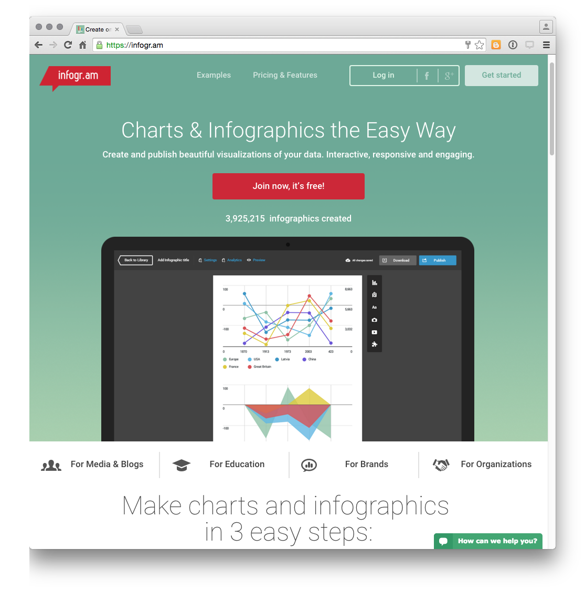
We will then see a page with some sample infographics to provide ideas to get you started.

Click on one of the infograms with a graph such as Trends in Something and then click inside the graph box itself and select the edit button in the top right.

This will open up a data panel with the toy data displayed.

We want to replace this data by choosing the upload button and selecting our pizza_country_1990_2012.csv file.
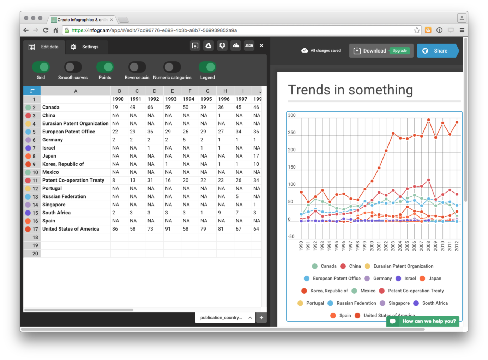
We now have a decent looking graph for our country trends data where we can see the number of records per country and year by hovering over the relevant data points. While some of the countries with low frequency data are crunched at the bottom (and would be better displayed in a separate graph), hovering over the data or over a country name will display the relevant country activity. We will therefore live with this.
We now want to start adding story elements by clicking on the edit button in the title. Next we can start adding new boxes using the menu icons on the right. Here we have changed the title, added a simple body text for the data credit and then a quote from someone describing themselves as the Head of Pizza Analytics.
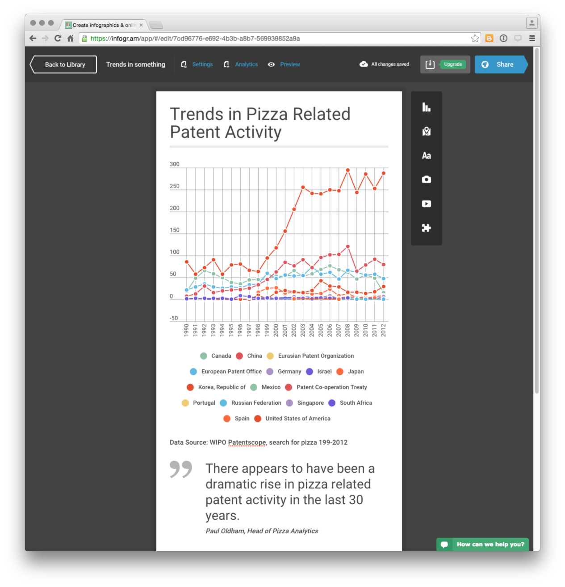
Next we need to start digging into the data using our IPC, applicants and phrases data.
To work with our IPC class data we will add a bar chart and load the data. To do this select the graph icon in the right and then Bar. Once again we will choose edit and then load our pizza_ipcclass_1990_2012 dataset. Then we can add a descriptive text box. We can then continue to add elements as follows:
- applicants bar chart
- pizza phrases by selecting graph and word cloud
- Google ipc-subclass
- Google word cloud.
One useful approach to developing an infographic is to start by adding the images and then add titles and text boxes to raise key points. In infogram new text boxes appear below existing boxes but can be repositioned by dragging and dropping boxes onto each other.
One nice feature of infogram is that it is easy to share the infographic with others through a url, an embed code or on facebook or via twitter.
At the end of the infographic it is a good idea to provide a link where the reader can obtain more information, such as the full report or the underlying data. In this case we will add a link to the Tableau workbook on pizza patent activity that we developed in an earlier chapter.
Our final infographic should look something like this.
###Round Up
In this chapter we have concentrated on using R to tidy patent data in order to create an online infographic using free software. Using our trusty pizza patent data from WIPO Patentscope we walked through the process of wrangling and tidying patent data first using short lines of code that we then combined into a reusable function. As this introduction to tidying data in R has hopefully revealed, R and packages such as dplyr, tidyr and stringr provide very useful tools for working with patent data, and they are free and well supported.
In the final part of the chapter we used the data we had generated in RStudio to create an infographic using infogr.am that we then shared online. Infogram is just one of a number of online infographic services and it is well worth trying other services such as easel.ly to find a service that meets your needs.
As regular users of R will already know, it is already possible to produce all of these graphics (such as word clouds) directly in R using tools such as ggplot2, plotly and word clouds using packages such as wordcloud. Some of these topics have been covered in other chapters and for more on text mining and word clouds in R see this recent article on R-bloggers. None of the infographic services we viewed appeared to offer an API that would enable a direct connection with R. There also seems to be a gap in R’s packages where infographics might sit with this 2015 R-bloggers article providing a walk through on how to create a basic infographic.